57 Diversidad biológica y biología de la conservación
1242
CONCEPTOS CLAVE
57.1 El evento de extinción en masa actual es único porque nunca antes en la historia de la Tierra la biodiversidad ha estado tan amenazada de extinción en un período tan breve. 57.2 La biología de la conservación es una ciencia multidisciplinaria que estudia los efectos humanos sobre la biodiversidad y elabora soluciones prácticas para afrontarlos. 57.3 A nivel mundial, la eliminación de grandes zonas boscosas para la explotación maderera, agricultura y otros usos está contribuyendo a la pérdida de la diversidad biológica y de valiosos servicios a los ecosistemas. 57.4 Hay fuertes evidencias del cambio climático global, el cual los científi cos pronostican que afectará de manera adversa la biodiversidad, la salud humana y la agricultura. 57.5 Aunque la capa de ozono estratosférico se está recuperando lentamente, los efectos dañinos a la biodiversidad y a los humanos continuarán por varias décadas.
L
a grulla blanca es una magnífi ca ave norteamericana conocida así debido a su voz fuerte y penetrante. Mide aproximadamente 1.4 m de alto y vive casi 50 años. Durante el siglo xx la población de la grulla disminuyó a sólo 16 en la naturaleza y su zona de reproducción se redujo desde la mayor parte del centro de Norteamérica hasta un solo sitio en Canadá. La cantidad de grullas blancas disminuyó principalmente debido a la pérdida de su hábitat en los humedales, que los humanos rellenaron para tierras de cultivo, desarrollos inmobiliarios y polígonos industriales. Gracias a los intensos esfuerzos de organizaciones de conservación y dependencias gubernamentales en Canadá y Estados Unidos, la parvada de grullas salvajes aún existe y consta de aproximadamente 387 aves. La población silvestre pasa el verano en Canadá y migra a la costa de Texas para el invierno. Preocupados porque las malas condiciones climatológicas, las enfermedades o alguna catástrofe natural o humana pudieran borrar esta población silvestre única, en la década de 1990 los biólogos reintrodu-
Lucky, la grulla blanca ( Grus americana ). Fotografi ada con uno de sus padres en Florida.
Steve Nesbitt/Florida Fish and Wildlife Conservation Commission
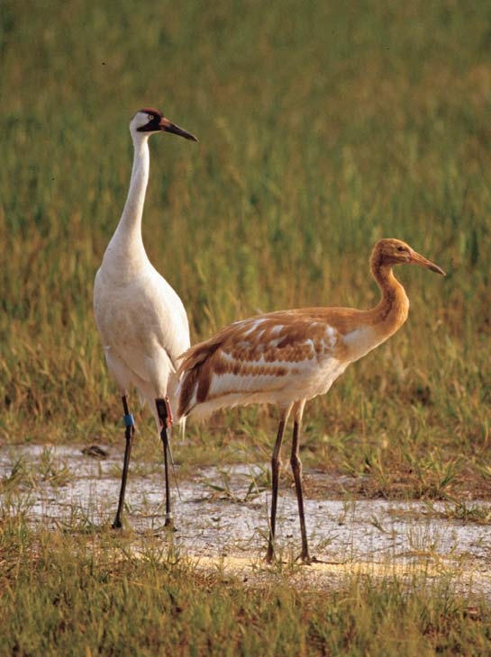
Diversidad biológica y biología de la conservación 1243
jeron una segunda población de grullas blancas en la región oriental de Norteamérica. Las grullas criadas en cautiverio son liberadas en la zona central de Florida para establecer esta población, donde reside otra relacionada de grullas de médano con requerimientos de hábitat semejantes. Una pareja de grullas blancas hizo historia en 2002 cuando se reprodujo con éxito. Un águila mató a una de las crías, pero la otra, llamada Lucky, sobrevivió (vea la fotografía). Lucky es la primera grulla blanca de padres criados en cautiverio y liberados, y la primera en nacer en estas condiciones en la naturaleza en Estados Unidos desde 1939. Las grullas blancas son un excelente ejemplo de los daños que los humanos infl igen a la biodiversidad biológica. También ejemplifi can los esfuerzos humanos por preservar la diversidad biológica en vías de desaparición, lo cual es un grave problema. Por ejemplo, según la Unión Internacional para la Conservación de la Naturaleza (IUCN por sus siglas en inglés), que supervisa el estado de la diversidad biológica, hasta un tercio de los mamíferos terrestres está en peligro de extinción. Se concluye este texto al dirigir la atención a la disminución de la diversidad biológica y la biología de la conservación. También se abordan tres casos ambientales que dañan la diversidad biológica: deforestación, cambio climático y agotamiento de la capa de ozono en la estratosfera.
57.1 LA CRISIS DE LA BIODIVERSIDDAD
OBJETIVOS DE APRENDIZAJE
1 Identifi car los distintos niveles de biodiversidad: diversidad genética, riqueza de especies y diversidad del ecosistema. 2 Distinguir entre especies amenazadas, especies en peligro y especies extintas. 3 Analizar por lo menos cuatro causas de la disminución de la diversidad biológica e identifi car la más importante.
La especie humana ( Homo sapiens ) ha estado presente en la Tierra aproximadamente por 195,000 años (vea el capítulo 22), que es un lapso breve en comparación con la edad de nuestro planeta, de alrededor de
4600 millones de años. A pesar de su breve paso por la Tierra, el impacto biológico sobre otras especies no tiene parangón. La cantidad de humanos ha aumentado de manera extraordinaria, la población humana alcanzó 7000 millones a mediados de 2011, y se ha ampliado su zona de distribución biológica, ocupando casi todos los hábitats del mundo. Dondequiera que vaya el ser humano, ha alterado el ambiente y lo ha ajustado a sus necesidades. En unas pocas generaciones ha transformado la faz de la Tierra, impuesto una gran tensión sobre los recursos del planeta y afectado profundamente a otras especies. Como resultado de estos cambios, muchas personas están preocupadas por la sustentabilidad ambiental , la capacidad de satisfacer las necesidades humanas actuales sin comprometer la capacidad de las generaciones futuras para satisfacer sus necesidades. El impacto de los humanos sobre el ambiente amerita un estudio especial en biología, no sólo porque nosotros somos humanos, sino porque nuestro impacto sobre el resto de la biosfera es muy amplio. La extinción , la muerte de las especies, ocurre cuando el último miembro de una especie muere. (En al capítulo 20 se presentó el importante concepto de la extinción). Aunque la extinción es un proceso biológico natural, las actividades humanas la han acelerado bastante ( FIGURA 57-1 ). La extinción está ocurriendo a una tasa tan alta como 1000 veces la tasa normal de extinción histórica, según el reporte de 2005 de Millenium Ecosystem Assessment. La fl oreciente población humana se ha visto obligada a distribuirse en casi todas las áreas del planeta. Cada vez que los humanos invaden un área, los hábitats de muchos vegetales y animales son perturbados o destruidos, lo que puede contribuir a su extinción. La diversidad biológica , también denominada biodiversidad , es la variación entre organismos ( FIGURA 57-2 ). La diversidad biológica incluye mucho más que simplemente la riqueza de especies , el número de especies de arqueas, bacterias, protistas, plantas, hongos y animales. La diversidad biológica ocurre en todos los niveles de la organización ecológica, desde poblaciones hasta ecosistemas. Toma en consideración la diversidad genética , que es la variedad genética dentro de una especie, tanto entre individuos en una población dada como entre poblaciones separadas geográfi camente. (Una especie individual puede tener cientos de poblaciones genéticamente distintas). La diversidad biológica también incluye la diversidad de ecosistemas , la variedad de ecosistemas que hay en la Tierra: bosques, praderas, desiertos, lagos, estuarios costeros, arrecifes de coral y otros ecosistemas.
Paloma silvestre Pingüino boreal Dodo Sapo dorado Aepyornis
FIGURA 57-1 Extinciones de animales seleccionados Estos animales se extinguieron en gran medida como resultado de las actividades humanas, como la destrucción de sus hábitats y la caza. (Adaptado de Miller, G. T. y S. E. Spoolman. Living in the Environment , 16a. ed. Brooks/Cole, Belmont, CA, 2009).
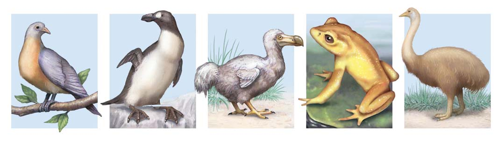
1244 Capítulo 57
Los biólogos deben considerar los tres niveles de diversidad biológica (riqueza de especies, diversidad genética y diversidad del ecosistema) cuando abordan el impacto humano sobre la biodiversidad. Por ejemplo, la desaparición de poblaciones (es decir, la disminución de la diversidad genética) indica un aumento en el riesgo de que una especie se extinga (disminución de la riqueza de especies). Los biólogos realizan análisis detallados para cuantifi car cuán grande debe ser una población a fi n de asegurar la sobrevivencia a largo plazo de una especie. La población más pequeña que tiene una alta probabilidad de permanecer en el futuro se conoce como población mínima viable ( PMV ). La diversidad biológica está disminuyendo en la actualidad a un ritmo sin precedente (consulte Preguntas acerca de: Disminución de las poblaciones de anfi bios ). Por ejemplo, la Lista Roja de Plantas Amenazadas de la IUCN, que se basa en datos recolectados y analizados a lo largo de 20 años, enumera alrededor 34,000 especies de plantas amenazadas de extinción en la actualidad. Debido a que las listas rojas aún no están disponibles para muchos países tropicales, resulta difícil conocer la escala verdadera de la crisis de la biodiversidad. Los seres humanos podrían haber ingresado al más grande período de extinción en masa en la historia del planeta, aunque la situación actual difi ere de períodos previos de extinción en masa en varios aspectos. Primero, su causa es directamente atribuible a actividades humanas. Segundo, está ocurriendo en un período enormemente contraído (apenas unas décadas, en oposición a cientos de miles de años), mucho más rápido que las tasas de especiación (o reemplazo). Algo quizá más serio es que cantidades más grandes de especies vegetales se están extinguiendo actualmente que en extinciones masivas previas. Debido a que los vegetales son la base de las redes alimentarias terrestres, la extinción de animales que dependen de las plantas no está muy lejana. Resulta fundamental determinar la manera en que la pérdida de biodiversidad afecta la estabilidad y el funcionamiento de los ecosistemas, que constituyen el sistema de soporte de la vida. La defi nición legal de una especie en peligro de extinción , como lo estipula la Ley de Especies en Peligro de Extinción de Estados Unidos, es una especie en peligro inminente de extinción en toda su zona de distribución o en parte importante de ésta. (La zona de distribución de una especie es el área donde se encuentra dicha especie). A menos que intervengan los humanos, es probable que una especie en peligro de extinción desaparezca. Cuando la extinción es menos inminente pero la población de una especie particular es demasiado pequeña, dicha especie se clasifi ca como amenazada. La defi nición legal de especie amenazada de extinción es: una especie con probabilidad de estar en peligro de extinción en el futuro inmediato, en toda su zona de distribución o en parte importante de ésta. Las especies en peligro o amenazadas de extinción representan una disminución en la diversidad biológica, porque a medida que su población se reduce, su diversidad genética disminuye en forma severa. Las especies en peligro y amenazadas de extinción están en mayor riesgo de extinción que las especies con mayor variabilidad genética porque la sobrevivencia y la evolución a largo plazo dependen de la diversidad genética (consulte la sección sobre deriva genética en el capítulo 19).
Las especies en peligro de extinción tienen ciertas características en común
Muchas especies en peligro o amenazadas comparten ciertas características que pueden hacerlas más vulnerables a la extinción. Algunas de estas características incluyen tener una zona de distribución extremadamente pequeña (localizada), requerir un gran territorio, vivir en islas, tener poco éxito reproductivo, necesitar áreas de reproducción especializadas y poseer hábitos de alimentación particulares.
La diversidad genética afecta la capacidad de una población para prosperar. A su vez, esto afecta la riqueza de especies dentro de un ecosistema, lo que termina por ayudar a determinar la diversidad de dicho ecosistema a lo largo de una gran escala espacial.
La diversidad genética en una población de ostreros
La riqueza de especies en un ecosistema arenoso oriental
Diversidad de un ecosistema en toda una región (océano y costa)
FIGURA 57-2 Niveles de biodiversidad El único cromosoma sin duplicar debajo de cada ostrero representa la variación genética entre los individuos de una población. A fi n de proteger la diversidad biológica, debe ocurrir la conservación de los tres niveles ecológicos.
PUNTO CLAVE
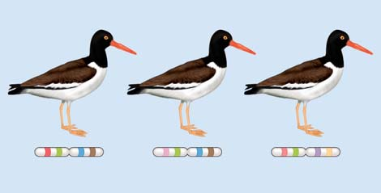
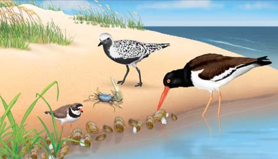
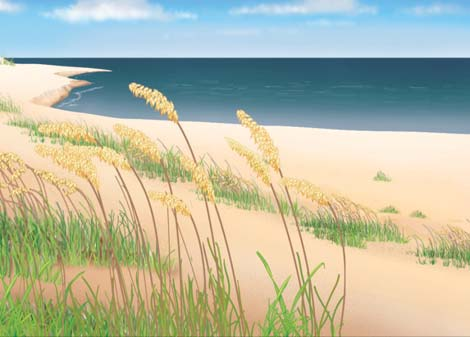
Diversidad biológica y biología de la conservación 1245
del mundo). Estas especies a menudo tienen poblaciones pequeñas que no pueden ser reemplazadas por inmigración si su población disminuye. Debido a que evolucionaron aisladas de competidores, depredadores y organismos portadores de enfermedades, las especies insulares presentan pocas defensas cuando estos organismos son introducidos, usualmente por humanos. No es sorprendente que de las 171 especies de aves que se han extinguido en los siglos pasados, 155 vivían en islas. Para que una especie sobreviva, sus miembros deben estar presentes dentro de su zona de distribución en cantidades sufi cientes para que los machos se apareen con las hembras. La población mínima viable que asegura el éxito reproductivo varía de un tipo de organismo a otro. Para todas las especies, cuando el tamaño de la población desciende por debajo de la población mínima viable, pasa por una declinación y empieza a ser susceptible de extinción. Las especies en peligro de extinción a menudo tienen bajas tasas de reproducción. La ballena azul hembra produce una sola cría al año, mientras que no más de 60% de las rosas del pantano, una especie en peligro de extinción de una pequeña planta que da fl ores, las produce en un año determinado ( FIGURA 57-3 ). Algunas especies en peligro de extinción se reproducen sólo en zonas especiales; por ejemplo, la tortuga marina verde sólo desova en unas pocas playas.
Muchas especies en peligro de extinción tienen una zona de distribución natural pequeña, que las hace particularmente propensas a la extinción si su hábitat es alterado. Por ejemplo, el lirio mariposa tiburón no se encuentra en ningún sitio de la naturaleza salvo cerca de una colina única próxima a San Francisco. El desarrollo de esa colina seguramente ocasionó la extinción de esta especie. Las especies que requieren territorios extremadamente grandes pueden estar amenazadas de extinción cuando todo su territorio o parte de él es modifi cado por la actividad humana. Por ejemplo, el cóndor de California es un ave que vive de carroña y requiere cientos de kilómetros cuadrados de territorio sin perturbar para encontrar comida adecuada. Este cóndor está recuperándose lentamente del borde de la extinción. De 1987 a 1992, sólo existía en parques zoológicos y no se encontraba en la naturaleza. En 1991 comenzó un programa para reintroducir en la naturaleza cóndores de California criados en zoológicos. En la actualidad, hay aproximadamente 327 cóndores, de los cuales más de la mitad viven en el medio silvestre de California y zonas adyacentes de México y Arizona. La historia del cóndor no es un éxito total porque los cóndores aún deben convertirse en una población autosufi ciente que reemplace su cantidad sin ser criados en cautiverio. Muchas especies endémicas insulares están en peligro de extinción. ( Endémico signifi ca que no se encuentran en ninguna otra parte
¿Qué está ocurriendo con las poblaciones de anfi bios? Desde la década de 1970, muchas de las poblaciones de ranas en el mundo han disminuido o desaparecido. Según la Global Amphibian Assessment de la IUCN, hasta 168 especies de anfi bios podrían haber desaparecido desde 1980 y se presume que se han extinguido. Alrededor de la tercera parte de las especies de anfi bios está disminuyendo y aproximadamente 500 se extinguirán en los próximos 50 años en caso de no estar en cautiverio. La disminución no está limitada a zonas con evidente destrucción del hábitat (como el desecado de humedales donde viven las ranas), degradación a causa de contaminantes o explotación excesiva. Algunos lugares remotos y prístinos también presentan notables disminuciones de anfi bios. Ningún factor por sí solo parece ser responsable de estas disminuciones. Algunos factores con apoyo científi co incluyen contaminantes, enfermedades contagiosas y cambio climático . Los productos químicos agrícolas están implicados en la disminución de anfi bios en la Sierra Nevada de California. Las poblaciones de ranas en las laderas orientales están relativamente sanas, pero alrededor de ocho especies están desapareciendo en las laderas occidentales, donde los vientos predominantes acarrean residuos de 15 pesticidas diferentes desde la región agrícola de los Valles Centrales. Los productos químicos agrícolas también están involucrados en la disminución de anfi bios en la costa oriental de Maryland y en Ontario, Canadá.
Las enfermedades infecciosas tienen una participación bastante intensa en algunas de las disminuciones. En 1998, un quítrido (hongo) fue relacionado por primera vez con la disminución de anfi bios. El cambio climático puede estar exacerbando la muerte de anfi bios inducida por el quítrido. A ciertas altitudes y temperaturas, el quítrido ha infectado y matado a 85% de los anfi bios.
Deformidades de los anfibios El descubrimiento de anfi bios con deformidades agrega otra capa de complejidad a la crisis de los anfi bios (vea la fotografía). Las ranas con patas y dedos adicionales, con los ojos en el hombro o en la espalda, quijadas deformes, falta de patas o sin ojos suelen morir antes de reproducirse. Los depredadores atrapan fácilmente ranas con patas faltantes o adicionales. Los anfi bios deformes se han reportado en cuatro continentes y en casi todos los estados de Estados Unidos. Los biólogos han investigado muchas causas posibles de las deformidades en los anfi bios durante su desarrollo y ningún factor individual explica las que se han encontrado en todos los sitios. Varios pesticidas afectan el desarrollo normal de los embriones de ranas. Asimismo, la infección de renacuajos con un trematodo (un platelminto parásito) ocasiona que los adultos que se desarrollan a partir de los renacuajos presenten deformidades en las extremidades. Múltiples estresantes ambientales, como pérdida de hábitat, enfermedades y contaminación, podrían interactuar de manera sinérgica entre sí para
provocar deformidades. Por ejemplo, las ranas leopardo del norte, estresadas por la presencia del herbicida atrazina en el agua, tienen mayor probabilidad de ser infectadas por los trematodos.
Preguntas acerca de
DISMINUCIÓN DE LAS POBLACIONES DE ANFIBIOS
Rana deforme. Los contaminantes y los parásitos están implicados en el desarrollo de anormalidades en los anfi bios , como esta rana arborícola del Pacífi co.
Frans Lanting/Corbis
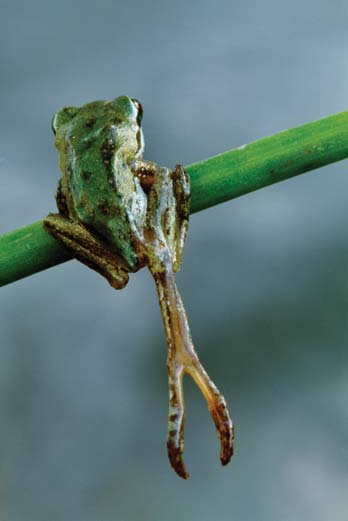
1246 Capítulo 57
domésticos; y la deforestación para producir madera cobran su cuota sobre los hábitats naturales. El desecado de marismas convierte los hábitats acuáticos en terrestres, mientras que la construcción de presas y canales inunda hábitats terrestres ( FIGURA 57-5 ). Debido a que la mayoría de los organismos requieren un tipo particular de hábitat, la destrucción de éste reduce su zona de distribución biológica y su capacidad de sobrevivencia. Los humanos a menudo dejan pequeños parches aislados de paisaje natural que las carreteras, las cercas, los campos y las construcciones rodean por completo. En términos ecológicos, una isla se refi ere no sólo a cualquier masa de tierra rodeada por agua sino también a cualquier hábitat aislado rodeado por una extensión de territorio inadecuado. En consecuencia, un parche pequeño de bosque rodeado por terreno agrícola y suburbano se considera una isla. La fragmentación del hábitat , la ruptura de grandes zonas de hábitat en pequeños segmentos aislados (es decir, islas), es una amenaza primordial para la sobrevivencia a largo plazo de muchas poblaciones y especies ( FIGURA 57-6 ). Las especies del paisaje “desarrollado” circundante pueden entrometerse en el hábitat aislado (el efecto de borde , analizado en el capítulo 54), mientras que especies raras de zonas de distribución amplias que requieren un gran parche de hábitat sin perturbar podrían desaparecer juntas. La fragmentación del hábitat alienta la dispersión de especies invasoras , organismos patógenos y otras especies dañinas, y hacen difícil la migración de los organismos. En términos generales, los fragmentos de hábitat sólo soportan una fracción de las especies encontradas en el ambiente original sin modifi car. Sin embargo,
Los hábitats de alimentación altamente especializados ponen en peligro a una especie. En la naturaleza, el panda gigante se alimenta sólo de bambú. De manera periódica, todas las plantas de bambú en una zona fl orecen y mueren juntas; cuando esto ocurre, la población de pandas afronta escasez de alimentos. Como muchas otras especies en peligro de extinción, los osos panda también están en riesgo porque sus hábitats han sido fragmentados y hay pocos hábitats intactos donde pueden sobrevivir. Los 1600 pandas gigantes salvajes de China viven en 24 hábitats aislados que representan una pequeña fracción de su zona de distribución histórica.
Las actividades humanas contribuyen a la disminución de la diversidad biológica
Las especies se ponen en peligro y se extinguen por varias razones, incluyendo la destrucción o modifi cación de sus hábitats (es decir, el cambio en el uso de la tierra) y la producción de contaminantes, incluidos los gases de efecto invernadero que ocasionan el cambio climático. Los humanos también trastornan el delicado equilibrio de los organismos en una zona al introducir especies invasoras. La explotación excesiva, como la sobrepesca es también un factor. La FIGURA 57-4 muestra la interacción entre estas causas directas de disminución de la diversidad biológica y factores humanos indirectos como el incremento de la población humana.
Para salvar especies, es necesario proteger sus hábitats
La mayoría de las especies que hoy afrontan la extinción están amenazadas por la destrucción, fragmentación o degradación de sus hábitats naturales. La construcción de carreteras, estacionamientos, puentes y edifi cios; la tala de bosques para incrementar cosechas o criar animales
FIGURA 57-3 La rosa del pantano, una especie en peligro de extinción La rosa del pantano ( Helonias bullata ) vive en zonas pantanosas en el este de Estados Unidos. Fotografi ada en el Parque Estatal Killens Pond, en Delaware.
Jeffrey Lepore/Photo Researchers, Inc.
Debido a que las causas directas e indirectas interactúan de maneras complicadas, resulta más efi caz tratar con la disminución de la diversidad biológica desde la perspectiva de la biología de sistemas.
Disminución de la diversidad biológica
Cambio climático
Incremento en la población humana
Incremento en la actividad económica Factores sociales, políticos y económicos
Aumento en el uso de la tecnología
Cambio en el uso de la tierra
Especies invasoras
Explotación excesiva Contaminación
FIGURA 57-4 Causas de la disminución de la diversidad biológica Las causas indirectas ( azul ) interactúan entre sí y amplifi can mutuamente sus efectos y los de las causas indirectas ( verde ).
PUNTO CLAVE
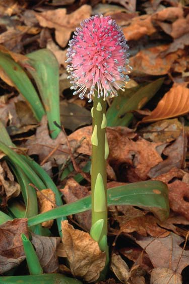
Diversidad biológica y biología de la conservación 1247
1985 o 1986. Desde entonces, el pequeño mejillón de agua dulce, que se agrupa en densidades extraordinarias, se ha acumulado en los cascos de botes, muelles, boyas, sistemas de toma de agua y, lo más dañino de todo, sobre las conchas de almejas y mejillones nativos. El voraz apetito del mejillón cebra por algas, fi toplancton y zooplancton también está recortando el abastecimiento de comida de peces, mejillones y almejas nativos, amenazando su sobrevivencia. El mejillón cebra se encuentra actualmente a lo largo de todo el río Mississippi y sus afl uentes. Según la Guardia Costera de Estados Unidos, este país gasta aproximadamente 5 mil millones de dólares cada año para controlar la dispersión del mejillón cebra y para reparar los daños ocasionados, como las tuberías obstruidas ( FIGURA 57-7 ). Las islas son particularmente sensibles a la introducción de especies invasoras. En Hawai, la introducción de ovejas ha puesto en peligro al árbol mamane (porque las ovejas se lo comen) y a una especie de mielero, un ave endémica que depende del árbol para alimentarse. Las
queda mucho por aprender sobre la manera precisa en que la fragmentación del hábitat afecta poblaciones, especies y ecosistemas específi cos. Las actividades humanas que producen lluvia ácida y otras formas de contaminación modifi can de manera indirecta los hábitats que aún están sin perturbar y en su estado natural. La lluvia ácida ha contribuido a la disminución de grandes zonas boscosas y a la muerte biológica de muchos lagos de agua dulce; por ejemplo, en las montañas Adirondack y en Nueva Escocia. Otros tipos de contaminantes, como productos químicos industriales y agrícolas, contaminantes orgánicos de las aguas residuales, desechos ácidos de fi ltraciones de minas y contaminación térmica de las aguas residuales calientes producidas por las plantas industriales, también afectan de manera adversa a los organismos.
Para salvar las especies nativas, es necesario controlar las intromisiones de especies invasoras
La contaminación biótica , la introducción de especies extrañas en una zona donde no son nativas, a menudo trastorna el equilibrio entre los organismos que viven en esa zona e interfi ere con el funcionamiento normal de los ecosistemas. A diferencia de otras formas de contaminación, que es posible limpiar, la contaminación biótica suele ser permanente. Las especies extrañas pueden cazar especies nativas o competir con ellas por comida o hábitat. Si las especies extrañas ocasionan daño económico o ambiental, se denominan especies invasoras . Por lo general, un competidor o depredador extraño daña a los organismos locales más que los competidores o depredadores nativos. La mayoría de las especies invasoras carecen de agentes naturales (como parásitos, depredadores y competidores) que en otro caso los controlarían. Asimismo, sin una historia evolutiva compartida, la mayoría de las especies nativas suelen estar menos equipadas para afrontar a las especies invasoras. Aunque las especies extrañas algunas veces se dispersan en nuevas zonas por sí mismas, los humanos suelen ser los responsables de estas intromisiones, ya sea con conocimiento de causa o en forma accidental. Una de las mayores amenazas biológicas en Norteamérica es el mejillón cebra, nativo del mar Caspio. Probablemente fue introducido por un barco extranjero que descargó lastre en los Grandes Lagos en
FIGURA 57-5 Animada Destrucción de hábitat Esta pequeña isla está en el canal de Panamá. Alguna vez fue la cima de una colina en un bosque que fue inundado cuando se construyó el canal.
Frans Lanting
EXPERIMENTO CLAVE
PREGUNTA: ¿Cómo afecta la fragmentación del hábitat la depredación de vieiras jóvenes en el ambiente marino?
HIPÓTESIS: La depredación de vieiras jóvenes es mayor en áreas irregulares de pastos marinos que en prados con pastos marinos sin perturbar.
EXPERIMENTO: Las tasas de depredación de vieiras jóvenes fueron medidas a lo largo de un período de 4 semanas en tres ambientes de pastos marinos: continuo, irregular y muy irregular.
0
40
80
100
30
70
20
60
10
50
90
Muy irregular Irregular Ambiente de pastos marinos Continuo
Porcentaje perdido por depredación
RESULTADOS Y CONCLUSIÓN: La tasa de depredación más baja (52%) ocurrió en el prado de pastos marinos continuo y la más alta (92%) ocurrió en el ambiente muy irregular. Las zonas irregulares (fragmentadas) dieron a los depredadores un mejor acceso a las vieiras. Fue más difícil para los depredadores entrometerse desde las áreas circundantes hacia el prado de pastos marinos continuo.
Fuente: Irlandi, E. A., W. G. Ambrose y B. A. Orando. “Landscape Ecology and the Marine Environment: How Spatial Confi guration of Seagrass Habitat Infl uences Growth and Survival of the Bay Scallop”. Oikos , vol. 72, 1995.
FIGURA 57-6 Efectos de la fragmentación del hábitat en un ambiente marino poco profundo
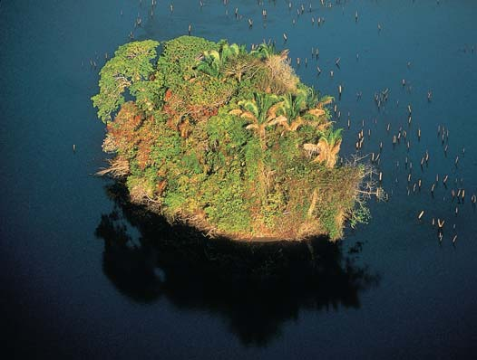
1248 Capítulo 57
negro ha promovido la caza ilegal, en particular en países empobrecidos, donde una venta de productos de contrabando puede mantener a una familia durante varios meses. La explotación comercial es la recolección de organismos vivos de la naturaleza. La mayoría de los organismos capturados terminan en zoológicos, acuarios, laboratorios de investigación científi ca, circos y tiendas de mascotas. Por ejemplo, varios millones de aves son explotadas comercialmente cada año para el mercado de mascotas, pero muchas mueren en el tránsito y muchos más perecen a causa del tratamiento inadecuado en los hogares de sus propietarios. Por lo menos 40 especies de pericos están actualmente amenazados o en peligro de extinción, en parte debido a la explotación comercial. Aunque es ilegal capturar animales amenazados, existe un mercado negro en auge, principalmente debido a que los coleccionistas en Estados Unidos, Europa y Japón pagan sumas extremadamente altas por aves tropicales raras ( FIGURA 57-8 ). La explotación comercial también constituye una amenaza para los vegetales. Muchas plantas raras o únicas han sido explotadas de manera tan intensa de la naturaleza que ahora están clasifi cadas como en peligro de extinción. Algunas son plantas carnívoras, bulbos de plantas silvestres, cactus y orquídeas. Por el contrario, el uso comercial cuidadosamente supervisado y regulado de recursos vegetales y animales constituye un incentivo económico para asegurar que no desaparezcan.
Repaso
■ ¿Cuáles son los tres niveles de diversidad biológica?
■ ¿Qué organismo tiene la mayor probabilidad de extinguirse, una especie amenazada o una especie en peligro? Explique su respuesta.
■ ¿De qué manera contribuye la fragmentación del hábitat a la disminución de la diversidad biológica?
■ ¿Cómo contribuyen las especies invasoras a la crisis de la biodiversidad?
plantas de Hawai evolucionaron en ausencia de mamíferos herbívoros, por lo que carecen de defensas contra ovejas, cerdos, cabras y venados introducidos.
Otras actividades humanas afectan la biodiversidad de manera directa o indirecta
Algunas veces las especies se ponen en peligro o se han extinguido como resultado de esfuerzos deliberados por erradicar o controlar su población, a menudo porque depredan animales de caza o ganado. En el pasado, rancheros, cazadores y agencias gubernamentales diezmaron las poblaciones de grandes depredadores como lobos, pumas y osos grises. Algunos animales son muertos porque sus estilos de vida causan problemas a los humanos. El perico de Carolina, una hermosa ave verde, roja y amarilla, endémico del sureste de Estados Unidos se extinguió en 1920, exterminado por los granjeros porque se alimentaba de los frutos de sus árboles. La caza no controlada o excesiva ha provocado la extinción de ciertas especies en el pasado, aunque ahora está estrictamente controlada en la mayoría de los países. La paloma silvestre estadounidense era una de las aves más comunes en Norteamérica a principios de la década de 1800, pero un siglo de caza excesiva dio por resultado su extinción a principios del siglo xx. La caza comercial ilegal, o caza furtiva , pone en peligro a animales más grandes como tigre, guepardo y leopardo de la nieve, cuyas hermosas pieles son muy valiosas. Los rinocerontes son cazados debido a sus cuernos (usados como mangos de dagas ceremoniales en Oriente Medio y para propósitos medicinales en la medicina asiática). Los osos son cazados por sus garras (que son utilizados por los doctores asiáticos para tratar dolencias que van de la indigestión a las hemorroides). Pero la carne de animales silvestres; por ejemplo, carne de primates raros, elefantes, osos hormigueros, se vende a restaurantes urbanos. Aunque la ley protege a estos animales, la demanda de sus productos en el mercado
FIGURA 57-7 Mejillones cebra obstruyen un tubo Los mejillones cebra ( Dreissena polymorpha ) del tamaño de un pulgar han ocasionado miles de millones de dólares en daños, además de desplazar a las almejas y mejillones nativos.
Illinois Department of Natural Resources
FIGURA 57-8 Captura comercial ilegal Estas guacamayas jacinto ( Anodorhynchus hyacinthus ) fueron incautadas en la Guyana Francesa en Sudamérica como parte del tráfi co ilegal de animales ahí. La población de estas guacamayas ha disminuido bastante en Sudamérica.
Jany Sauvanet/NHPA
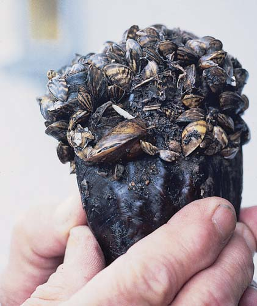
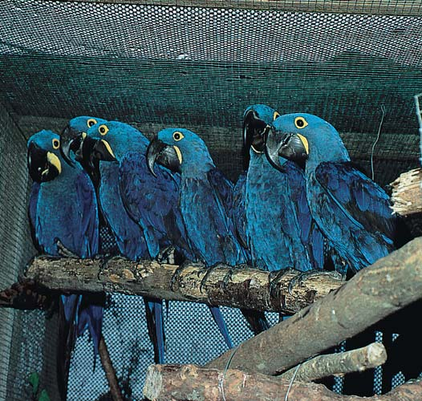
Diversidad biológica y biología de la conservación 1249
la diversidad biológica. En la actualidad, más de 100,000 parques nacionales, santuarios marinos, refugios para la vida salvaje, bosques y otras zonas están protegidos en todo el mundo. Estos sitios abarcan un área total casi tan grande como Canadá. Sin embargo, muchas zonas protegidas tienen usos múltiples que algunas veces entran en confl icto con el objetivo de preservar especies. Por ejemplo, los parques nacionales satisfacen necesidades recreativas, mientras los bosques nacionales son usados para tala, pastoreo y extracción de minerales. Los derechos minerales de muchos refugios de la vida silvestre son propiedad privada, y petróleo, gas y otros desarrollos minerales han aparecido en algunos de estos refugios. Las zonas protegidas no siempre son efi caces en la preservación de la diversidad biológica, en particular en países en desarrollo donde la diversidad biológica es máxima, porque hay pocos recursos económicos o experiencia para gestionarlas. Otro inconveniente de las zonas protegidas mundiales es que muchas están en áreas montañosas, tundra y los desiertos más secos con poca población, sitios que a menudo tienen escenarios espectaculares pero relativamente pocos tipos de especies. En realidad, estas zonas tan remotas a menudo son designadas como reservas porque son inadecuadas para el desarrollo comercial. Por el contrario, los ecosistemas donde la diversidad biológica es máxima a menudo reciben poca atención. Las zonas protegidas son necesarias con urgencia en bosques tropicales lluviosos, los pastizales tropicales y las sabanas de Brasil y Australia, y en los bosques secos que están ampliamente dispersos en el mundo. Los organismos del desierto están desprotegidos en el Norte de África y en Argentina, y las especies de muchas islas y cuencas fl uviales templadas también necesitan protección. Muchas de estas zonas desprotegidas forman parte de lo que algunos biólogos han identifi cado como los 25 puntos críticos de la biodiversidad en el mundo ( FIGURA 57-9 ). Los puntos críticos constituyen en conjunto 1.4% de la tierra del planeta, pero contienen tanto como 44% de todas las especies vegetales vasculares, 29% de las especies de aves endémicas, 27% de las especies endémicas de mamíferos, 38% de las especies endémicas de reptiles y 53% de las especies endémicas de anfi bios. Casi 20% de la población mundial humana vive en los puntos críticos. Quince de los 25 puntos críticos son tropicales y 9 son, en su mayoría o únicamente, islas. Los 25 puntos críticos son arbitrarios de alguna manera, ya que se identifi can puntos críticos adicionales cuando se aplican criterios diferentes. No todos los biólogos de la conservación coinciden en que los limitados recursos para la conservación se dediquen a la protección de puntos críticos de la biodiversidad, porque al hacerlo se ignoran los muchos servicios a los ecosistemas proporcionados por ecosistemas enteros que desaparecen con rapidez debido a la destrucción del hábitat. Por ejemplo, los vastos bosques boreales en Canadá y Rusia son de importancia crítica para el funcionamiento idóneo de los ciclos globales del carbono y del nitrógeno. Estos bosques están siendo talados a un ritmo sin precedente. Sin embargo, las organizaciones de conservación no los reconocen como puntos críticos. La ecología del paisaje contempla una perspectiva más amplia de la conservación de los ecosistemas.
La ecología del paisaje considera tipos de ecosistemas a escala regional
La subdisciplina de la ecología que estudia las relaciones en un paisaje heterogéneo que consta de múltiples ecosistemas que interactúan se conoce como ecología del paisaje . Cada vez más, los biólogos están enfocando sus esfuerzos en preservar la biodiversidad en los paisajes. Pero, ¿cuál es el tamaño mínimo de un ecosistema-paisaje necesario para preservar las poblaciones y distribuciones de las especies?
57.2 BIOLOGÍA DE LA CONSERVACIÓN
OBJETIVOS DE APRENDIZAJE
4 Defi nir biología de la conservación y comparar las medidas de conservación in situ y ex situ. 5 Describir los benefi cios y las defi ciencias de la Ley de Especies en Peligro de Extinción de Estados Unidos y de la Convención sobre Comercio Internacional de Especies de Fauna y Flora Silvestres en Peligro.
La biología de la conservación es el estudio científi co de cómo los humanos afectan a los organismos y del desarrollo de mecanismos para proteger la diversidad biológica. Los biólogos de la conservación desarrollan modelos, diseñan experimentos y hacen trabajo de campo para responder una amplia gama de preguntas. Por ejemplo, ¿cuáles son los procesos que infl uyen en la disminución de la diversidad biológica? ¿Cómo proteger y restituir las poblaciones de especies en peligro de extinción? Si se deben preservar ecosistemas y paisajes completos, ¿cuáles son los más importantes por rescatar? Los biólogos de la conservación han determinado que una sola área grande de hábitats capaz de sostener varias poblaciones es más efi caz en salvaguardar una especie en peligro de extinción que varios hábitats fragmentados, cada uno capaz de sostener una sola población. Asimismo, una gran zona de hábitats suele soportar mayor riqueza de especies que varios hábitats fragmentados. La conservación es más exitosa cuando las zonas de hábitat de una especie dada están muy cercanas, en lugar de estar alejadas entre sí. Si una zona de hábitat está aislada de otras zonas, los individuos pueden no dispersarse de manera efi caz de un hábitat a otro. Debido a que la presencia de humanos afecta de manera adversa a muchas especies, las zonas de hábitat que carecen de caminos o son inaccesibles para los humanos son mejores que las zonas accesibles para éstos. Según los biólogos de la conservación, es más efi caz y, en última instancia, más económico preservar ecosistemas intactos en los que viven muchas especies que intentar preservar especies individuales. Los biólogos de la conservación suelen considerar de mayor prioridad la preservación de zonas con mayor diversidad biológica. La biología de la conservación incluye dos métodos para resolver problemas que salvan a los organismos de la extinción: la conservación in situ y la conservación ex situ. La conservación in situ , que incluye el establecimiento de parques y reservas, se centra en la preservación de la diversidad biológica en la naturaleza. Una gran prioridad de la conservación in situ es identifi car y proteger sitios que alojan una gran cantidad de diversidad. Sin embargo, con las crecientes demandas de tierra, la conservación in situ no puede preservar todos los tipos de diversidad biológica. Algunas veces, sólo la conservación ex situ puede salvar a una especie. La conservación ex situ conserva especies individuales en instalaciones controladas por humanos. La crianza de especies en cautiverio en zoológicos y el almacenamiento de semillas de cultivos vegetales genéticamente diversos son ejemplos de la conservación ex situ.
La conservación in situ es la mejor manera de preservar la diversidad biológica
La protección de los hábitats de animales y vegetales; es decir, la conservación y gestión de ecosistemas como un todo, es la mejor manera de proteger la diversidad biológica. Muchas naciones han dispuesto zonas como hábitats de la vida silvestre. Estos ecosistemas naturales son la mejor estrategia para la protección y la preservación a largo plazo de
1250 Capítulo 57
Un estudio a largo plazo que aborda esta cuestión en bosques tropicales lluviosos es el Biological Dynamics of Forest Fragment Project (antes conocido como Minimum Critical Size of Ecosystem Project), en el que se están estudiando una serie de fragmentos de bosque lluvioso del Amazonas cuyo tamaño varía de 1 a 100 hectáreas ( FIGURA 57-10 ). Los datos preliminares de este estudio, que empezó en 1979, indican que los fragmentos más pequeños de bosque no mantienen su integridad ecológica. Por ejemplo, grandes árboles cercanos a los bordes del bosque a menudo mueren o son dañados debido a la exposición al viento, la desecación (debido a la exposición lateral del fragmento del bosque a la luz solar) y la invasión de lianas leñosas parásitas. Además, los biólogos han documentado que varias especies adaptadas al interior del bosque no prosperan en los fragmentos más pequeños y terminan por morir, mientras que las especies adaptadas a los límites del bosque invaden los fragmentos más pequeños y prosperan. Por desgracia, la colonización por parte de los humanos y otras actividades están comenzando a amenazar el Biological Dynamics of Forest Fragment Project mismo. La agricultura está ampliándose en la zona, los bosques próximos están siendo quemados, y la tala y la caza están aumentando. En caso de que la expansión humana llegue al sitio de investigación, los benefi cios potenciales que podrían obtenerse de la comprensión de los efectos de la fragmentación del bosque se habrán perdido.
Corredores de hábitat. Para remediar la amplia fragmentación del hábitat y su pérdida de biodiversidad concomitante, los biólogos de la conservación han propuesto la vinculación de fragmentos aislados con corredores de hábitat , bandas de hábitat que unen parches de hábitat aislados. Estos corredores permiten que la vida salvaje se desplace para
Ciertas zonas del mundo, puntos críticos para la biodiversidad, son de importancia crítica porque contienen un número desproporcionado de las especies endémicas del mundo.
Provincia Florística de California
Bosques mesoamericanos
Chocó-Darién-occidente de Ecuador
Zona tropical de los Andes
Centro de Chile
Mar Caribe
Cuenca del Mediterráneo
Cerrado brasileño
Montañas del arco oriental y bosques costeros de Kenia y Tanzania
Cáucaso
Indobirmana
Montañas de China sudcentral
Ghats occidentales y Sri Lanka
Karoo suculento
Bosques de Guinea del oeste de África
Región del Cabo Florístico de Sudáfrica
Madagascar-islas del océano Índico
Sundaland
Nueva Zelanda
Nueva Caledonia
Wallacea
Filipinas
Complejo de islas de Polinesia y Micronesia
Australia sudoccidental
Bosques del Atlántico brasileño
Complejo de las islas de Polinesia y Micronesia
FIGURA 57-9 Animada Puntos críticos de la biodiversidad Estos puntos críticos, ricos en especies endémicas, están bajo presión a causa de la cantidad de humanos que viven en ellos. (Datos de Conservation International).
PUNTO CLAVE
FIGURA 57-10 Selva amazónica en Ecuador. Primer plano de la carretera que ha facilitado la llegada de colonos que han talado parte de la selva, manteniendo la selva tropical primaria más allá del río, en el fondo.
R. O. Bierregaard
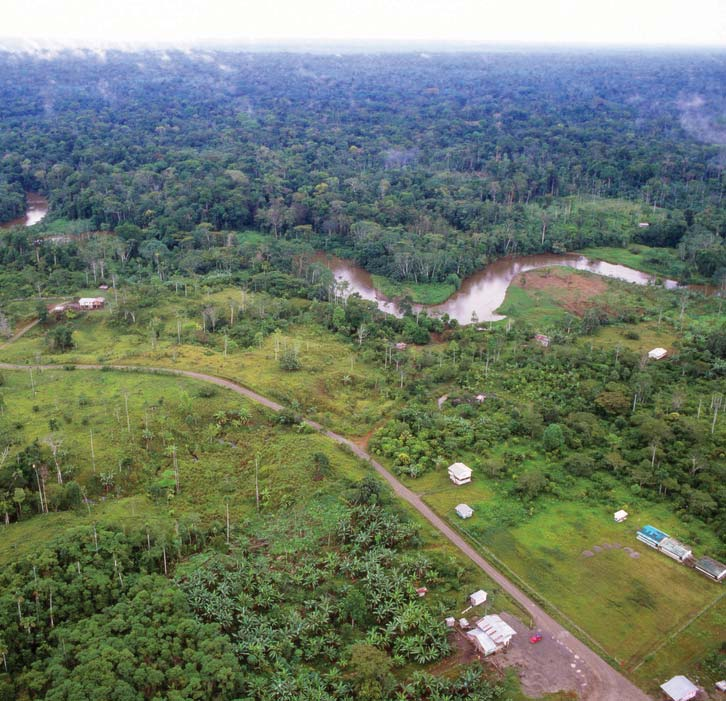
Diversidad biológica y biología de la conservación 1251
subrogada o sustituta , una hembra de una especie rara es tratada con medicamentos para la fertilidad, que la hacen producir múltiples óvulos. Algunos de éstos se reúnen, fertilizan con esperma y se implantan quirúrgicamente en hembras de una especie relacionada pero menos rara, que más tarde dan a luz a descendencia de la especie rara (vea Preguntas acerca de: Nuevos orígenes , en el capítulo 50). Actualmente hay planes en desarrollo para clonar especies en peligro de extinción, como el panda gigante, que no se reproduce bien en cautiverio. Otra técnica implica parches de hormonas, que están siendo desarrollados para estimular la reproducción en aves amenazadas; el parche se coloca bajo el ala del ave hembra. En los programas de crianza en cautiverio han ocurrido algunos sucesos notables, en los que grandes cantidades sufi cientemente grandes de especies han sido producidas a fi n de reestablecer pequeñas poblaciones en la naturaleza. Por ejemplo, los esfuerzos de conservación permitieron que el águila calva volviera de manera extraordinaria a los 48 estados meridionales de Estados Unidos y, en 2007, el Fish and Wildlife
que se alimenten, apareen y vuelvan a colonizar hábitats una vez que hayan ocurrido extinciones locales. La investigación también ha demostrado que los fragmentos de hábitat vinculados por corredores de hábitat retienen más especies vegetales nativas que los fragmentos aislados. Los corredores de hábitat varían desde una escala local (como un paso a desnivel que permite que la vida salvaje cruce un camino de manera segura) hasta una escala de paisaje que une reservas separadas ( FIGURA 57-11 ). El ancho mínimo para corredores a escala de paisaje varía en función del tamaño de las zonas de distribución que habitan las diversas especies. Por ejemplo, para unir dos reservas y proteger a los lobos en Minnesota, el corredor debe medir por lo menos 12 kilómetros de ancho, mientras que el ancho mínimo del corredor para los linces en Carolina del Sur debe medir 2.5 km.
La meta de la ecología de la restauración es rescatar hábitats destruidos o dañados
Aunque la preservación de hábitats es parte importante de la biología de la conservación, las realidades del mundo, que incluyen el hecho de que el apetito de tierra por parte de los humanos sigue creciendo, dictan una variedad de otras medidas de conservación. Algunas veces los científi cos reclaman terrenos sin perturbar y los transforman en zonas con una gran biodiversidad biológica. La ecología de la restauración , en la cual los principios de la ecología se usan para transformar un ambiente degradado en uno más funcional y sustentable, forma parte importante de la conservación in situ. Desde 1934, el Jardín Botánico de la Universidad de Wisconsin-Madison ha llevado a cabo uno de los ejemplos más famosos de restauración ecológica ( FIGURA 57-12 ). Varias comunidades naturales diferentes han sido desarrolladas con cuidado en terrenos agrícolas dañados. Estas comunidades incluyen praderas de pastos altos, una pradera xérica (seca) y varios tipos de bosques de pino y arce nativos de Wisconsin. La restauración de terrenos perturbados no sólo crea hábitats biológicos, sino que también conlleva benefi cios adicionales, como la regeneración del suelo que ha sido dañado por la agricultura o la minería. Algunas desventajas de la ecología de la restauración incluyen el tiempo y los gastos necesarios para rescatar una zona. A pesar de ello, la ecología de la restauración es un aspecto importante de la biología de la conservación, ya que se considera que la restauración reducirá las extinciones.
La conservación ex situ intenta salvar especies que están al borde de la extinción
Zoológicos, acuarios y jardines botánicos a menudo tratan de salvar algunas especies en peligro de extinción. Se recolectan huevos de la naturaleza, o los pocos animales que quedan son capturados y criados en zoológicos y otras instalaciones de investigación. Técnicas especiales, como la inseminación artifi cial y la maternidad sustituta, incrementan el número de descendientes. En la inseminación artifi cial , se recolecta esperma de un macho idóneo de una especie rara, que se usa para inseminar a una hembra, que quizá se encuentra en un zoológico en otra ciudad e incluso en otro país. En la maternidad
OREGON CALIFORNIA Desierto Red Buttes A las cascadas Oregon Al desierto Kalmiopsis
Desierto Siskiyou
Campo Feliz
25 km
Desierto Marble Mountain
Barra Somes
Al Parque Nacional Redwood
Weitchpec
Bifurcación de Salmón
Desierto Russian
Desierto Trinity Alps
Riachuelo Willow
C R
E S
T A
S I
S K
I Y
O
U
R
í
o
S
a
l
m ó
n
R
í
o
K
l
a
m
a t
h
R í
o
K l a
m
a
t
h
R í o T
r
i
n
i
t
y
R
í
o
S
c o t t
Áreas desiertas Corredores de hábitat propuestos
Área de estudio
FIGURA 57-11 Corredores de hábitat propuestos En el norte de California y el sur de Oregon ya se han establecido cinco áreas silvestres. Éstas preservarían de manera más efi caz la biodiversidad si estuviesen unidas por corredores de hábitat para formar una sola unidad de conservación a escala de paisaje. Hasta la fecha, el Servicio Forestal de Estados Unidos no ha adoptado esta propuesta de corredores. ( Las fl echas indican la dirección de otras áreas silvestres vecinas ). (Tomado de Pace, F. “The Klamath Corridors: Preserving Biodiversity in the Klamath National Forest”, en Landscape Linkages and Biodiversity , editado por W. E. Hudson, pp. 105-116, Island Press, Washington, D. C., 1991. Reproducido con autorización de Island Press).
1252 Capítulo 57
La Ley de Especies en Peligro de Extinción proporciona algo de protección legal para especies y hábitats
En 1973, en Estados Unidos se aprobó la Ley de Especies en Peligro de Extinción (ESA) , que autorizó al FWS para proteger a especies en peligro y amenazadas de extinción en Estados Unidos y en el extranjero. Ahora, muchos otros países cuentan con una legislación semejante. El FWS conduce un estudio detallado de una especie para determinar si debe incluirse como en peligro o amenazada de extinción ( TABLA 57-1 ). La ESA proporciona protección legal a las especies incluidas, de modo que su peligro de extinción se ha reducido. Por ejemplo, el acta establece que es ilegal vender o comprar cualquier producto elaborado a partir de una especie en peligro o amenazada de extinción. La ESA requiere que los ofi ciales del FWS elijan hábitats críticos y diseñen un plan de recuperación para cada una de las especies enumeradas. El plan de recuperación incluye una estimación del tamaño de la población actual, un análisis de los factores que contribuyeron a este peligro y una lista de las actividades que pueden ayudar a la recuperación de la especie. La Ley de Especies en Peligro de Extinción está considerada como una de las piezas más fuertes de la legislación ambiental en Estados Unidos, en parte porque las especies se designan en peligro o amenazadas de extinción totalmente con base en argumentos biológicos. Actualmente, las consideraciones económicas no pueden infl uir en la designación de especies en peligro o amenazadas de extinción. Los biólogos suelen coincidir en que como resultado de la aprobación de la ESA en 1973, se han extinguido menos especies de las que se habría esperado en caso de que la ley jamás hubiera sido aprobada. La ESA es también una de las piezas más controvertidas de la legislación ambiental. Por ejemplo, la ESA no proporciona ninguna compensación a los poseedores de propiedades privadas que sufren pérdidas económicas porque no pueden desarrollar sus terrenos en caso de que en ellas habiten especies en peligro o amenazadas de extinción. La ESA también ha interferido con algunos proyectos de desarrollo subsidiados por el gobierno federal. En la actualidad se requieren, en promedio, alrededor de 17 años para que una especie candidata cuya población disminuye sea incluida en la lista de especies en peligro o amenazadas de extinción. Este atraso se debe tanto al alto costo de evaluar cada especie como a los fondos limitados asignados al FWS para realizar estos estudios. Mientras tanto, 27 especies en la “lista de candidatos” de la ESA se han extinguido desde 1973 sin haber sido clasifi cadas jamás como en peligro o amenazadas de extinción, con lo que hubieran tenido algo de protección. La ESA está más orientada a salvar unas cuantas especies populares en peligro de extinción que a rescatar el mucho mayor número de especies menos populares que realizan valiosos servicios a los ecosistemas. Aproximadamente un tercio de los fondos anuales para la ESA se utiliza para ayudar a apenas 10 especies. Sin embargo, son los organismos menos glamorosos, como plantas, hongos, bacterias e insectos, los que desempeñan los papeles centrales en los ecosistemas y contribuyen más a su funcionamiento. Por ejemplo, las bacterias y los hongos proveen el crítico e importante servicio al ecosistema de descomponer la materia orgánica muerta en sustancias simples (CO 2 , agua y minerales) que después son recicladas por plantas y otros autótrofos. A los biólogos de la conservación les agradaría ver que la ESA se reforzara de modo que fuese posible gestionar ecosistemas completos y mantener una diversidad biológica completa en lugar de intentar salvar especies en peligro de extinción como entes aislados. Este enfoque ofrecería protección colectiva a muchas especies que están desapareciendo, en lugar de a sólo unas pocas.
Service (FWS) de Estados Unidos retiró al águila calva de la lista de especies en peligro de extinción. El intento por salvar especies que están al borde de la extinción suele ser costoso; por tanto, sólo una pequeña proporción de las especies en peligro puede ser rescatada. Además, los zoológicos, acuarios y jardines botánicos no cuentan con el espacio para salvar a todas las especies en peligro de extinción. Esto signifi ca que los biólogos de la conservación deben establecer prioridades en cuanto a qué especies tratar de salvar. Los zoológicos se han enfocado tradicionalmente en animales grandes y carismáticos, como pandas, águilas calvas y grullas blancas, ya que el público está más interesado en ellos. Estos esfuerzos de conservación ignoran a millones de especies ecológicamente importantes. Sin embargo, los zoológicos, acuarios y jardines botánicos realizan algo bastante útil, porque educan al público sobre el valor de la biodiversidad. Resulta evidente que controlar en primer lugar el desenfrenado desarrollo humano, de modo que las especies no estén en peligro de extinción, es una forma efi caz de proteger y mantener el hábitat natural.
FIGURA 57-12 Restauración de tierras dañadas
- La restauración de la pradera por el Jardín Botánico de la Universidad de Wisconsin-Madison empezó en 1935. Las personas están cavando hoyos para plantar césped de la pradera.
Cortesía de la University of Wisconsin–Madison Arboretum
- La pradera como se ve hoy. Esta fotografía fue tomada casi en el mismo sitio que la fotografía de 1935.
Cortesía de Virginia Kline
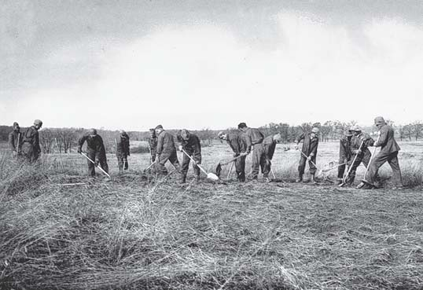
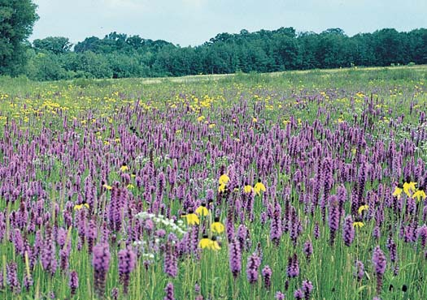
Diversidad biológica y biología de la conservación 1253
57.3 DEFORESTACIÓN
OBJETIVOS DE APRENDIZAJE 6 Analizar los servicios que los bosques prestan a los ecosistemas y describir las consecuencias de la deforestación. 7 Dar por lo menos tres razones de por qué los bosques (tropicales lluviosos y boreales) están desapareciendo actualmente.
El problema más grave al que se están enfrentando los bosques del planeta y su diversidad biológica es la deforestación , que es la tala temporal o permanente de grandes extensiones boscosas para fi nes agrícolas u otros usos ( FIGURA 57-13 ). Según la Organización de las Naciones Unidas para la Agricultura y la Alimentación (FAO por sus siglas en inglés), que proporciona estadísticas mundiales sobre la cubierta forestal, los bosques están reduciéndose en aproximadamente 9 millones de hectáreas cada año. Cuando los bosques son destruidos, dejan de contribuir con valiosos servicios a los ecosistemas para el ambiente o para las personas que dependen de ellos. La deforestación incrementa la erosión del suelo y disminuye así su fertilidad. La erosión del suelo ocasiona un aumento en la sedimentación de vías hídricas, lo que daña a los ecosistemas acuáticos corriente abajo al reducir la penetración de luz, cubrir organismos acuáticos y llenar los cursos de agua. La erosión no controlada del suelo, en particular en pendientes pronunciadas deforestadas, provoca aludes de lodo que ponen en peligro la vida y las propiedades de los humanos y reducen la producción de energía hidroeléctrica porque el cieno se acumula detrás de las presas. En zonas más secas, la deforestación puede llevar a la formación de desiertos. La deforestación contribuye a la pérdida de la diversidad biológica. Muchas especies tienen zonas de distribución limitadas dentro de un bosque, en particular en el trópico, de modo que son especialmente vulnerables a la destrucción o modifi cación del hábitat. Las especies migratorias, como aves y mariposas, también sufren por la deforestación tropical. Al capturar y absorber la precipitación, los bosques en las laderas y montañas ayudan a proteger de inundaciones a las tierras bajas. Cuando un bosque es talado, la cuenca no puede absorber y retener el agua tam-
Los acuerdos internacionales proporcionan algo de protección a especies y hábitats
La Convención sobre Comercio Internacional de Especies de Fauna y Flora Silvestres en Peligro ( CITES ) es un tratado internacional que entró en vigor en 1975. Elaborado originalmente para proteger animales y plantas en peligro de extinción considerados valiosos en el gran comercio lucrativo internacional de la vida salvaje, la CITES prohíbe cazar, capturar y vender especies en peligro de extinción y regula el comercio de organismos enlistados como potencialmente amenazados. Por desgracia, la aplicación de este tratado varía de un país a otro, e inclusive donde existe la prohibición, las penalizaciones no son muy severas. Como resultado, el comercio ilegal de especies raras y comercialmente valiosas continúa. Las metas de la CITES a menudo despiertan controversias sobre temas tales como a quién pertenece en realidad la vida silvestre y si la preocupación por la conservación mundial prevalece sobre los intereses de competencia local. A menudo estos confl ictos resaltan las diferencias socioeconómicas entre los consumidores adinerados de productos protegidos por la CITES y la gente de bajos recursos que comercia los organismos en peligro de extinción. Otro tratado internacional, el Convenio sobre la Diversidad Biológica, requiere que cada nación signataria haga un inventario de su propia biodiversidad y desarrolle una estrategia nacional de conservación , un plan detallado para gestionar y preservar la diversidad biológica de ese país específi co.
Repaso
■ ¿Qué es la biología de la conservación?
■ La ecología del paisaje y la biología de la conservación, ¿son ejemplos de conservación in situ o ex situ?
■ ¿Qué tipo de medida de conservación, in situ o ex situ, ayuda al mayor número de especies? ¿Por qué?
■ ¿Por qué es tan controvertida la Ley de Especies en Peligro de Extinción de Estados Unidos?
Organismos enumerados como especies en peligro o amenazadas de extinción en Estados Unidos, 2008
Número de Número de Tipo de especies en peligro especies amenazadas organismo de extinción de extinción
Mamíferos 69 12
Aves 75 14
Reptiles 13 24
Anfi bios 13 10
Peces 74 65
Caracoles 64 11
Almejas 62 8
Crustáceos 19 3
Insectos 47 10
Arácnidos 12 0
Plantas que dan fl ores 570 143
Coníferas y cícadas 2 1
Helechos y otras plantas 24 2
Fuente: Fish and Wildlife Service de Estados Unidos
TABLA 57-1
FIGURA 57-13 Animada Deforestación Vista aérea de zonas taladas en el Bosque Nacional Giff ord Pinchot en el suroeste del estado de Washington. Las líneas son caminos construidos a expensas de los contribuyentes fi scales para sacar la madera.
Gary Braasch/Getty Images
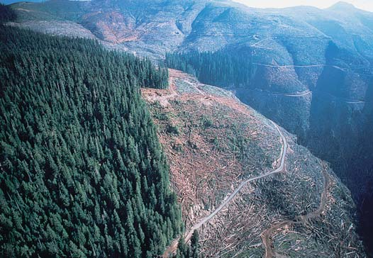
1254 Capítulo 57
tamientos humanos ( FIGURA 57-14 ). Algunas veces, las condiciones económicas alientan la deforestación. El campesino que transforma más bosques en pastos puede mantener un rebaño más grande de ganado, lo que es una buena defensa contra la infl ación. Si se toma en cuenta que la deforestación tropical es un problema complejo, tal vez tres agentes sean las causas más inmediatas de la deforestación en los bosques tropicales lluviosos: subsistencia de la agricultura, tala comercial y cría de ganado. Otras razones de la destrucción de los bosques tropicales incluyen el desarrollo de energía hidroeléctrica, que inunda grandes zonas boscosas; la minería, en particular cuando las fundiciones de mineral queman carbón producido a partir de los árboles del bosque lluvioso; y agricultura al estilo de plantación, con cultivos como cítricos y plátanos. La agricultura de subsistencia , en la que una familia produce sufi ciente comida para alimentarse, explica tal vez 60% de la deforestación tropical. En muchos países en desarrollo donde hay bosques tropicales, la mayoría de la gente no es propietaria de la tierra donde vive y trabaja. La mayoría de los agricultores de subsistencia no tienen a dónde ir, excepto el bosque, que talan para cultivar alimentos. Las reformas agrarias en Brasil, Madagascar, México, las Filipinas, Tailandia y muchos otros países harían que la tierra, propiedad de pocos en la actualidad, estuviese disponible para todos, aliviando así la presión de los agricultores de subsistencia sobre los bosques tropicales. Este escenario es poco probable
bién, y la cantidad superfi cial total de escurrimientos hacia ríos y corrientes se incrementa. Esto no sólo provoca erosión del suelo, también pone en riesgo extremo de inundación a las tierras bajas. La deforestación puede afectar cambios climáticos regionales y mundiales. Los árboles que transpiran liberan cantidades importantes de humedad hacia el aire. Esta humedad regresa a la superfi cie en el ciclo hidrológico. Cuando un gran bosque es destruido, puede disminuir la precipitación pluvial y las sequías pueden volverse comunes en esa región. Algunos estudios sugieren que el clima local se ha vuelto más seco en partes de Brasil donde han sido quemadas extensiones del bosque lluvioso. Las temperaturas también pueden subir ligeramente en una zona deforestada porque hay menos enfriamiento por evaporación de los árboles. La deforestación puede incrementar la temperatura global al liberar hacia la atmósfera el carbono almacenado en los árboles en la forma de bióxido de carbono, lo cual permite que el aire retenga el calor. El carbono en los bosques es liberado de inmediato si los árboles son quemados o más lentamente cuando las partes sin quemar se descomponen. Si los árboles son cortados y los troncos son retirados, aproximadamente la mitad del carbono del bosque permanece como materia muerta (ramas grandes y pequeñas, raíces y hojas) que se descomponen, liberando bióxido de carbono. Cuando un bosque de árboles viejos es talado, pueden requerirse 200 años para que el bosque sustituto acumule la cantidad original de carbono que estaba almacenada en el bosque original.
¿Por qué están desapareciendo los bosques tropicales?
La mayoría de los bosques tropicales lluviosos sin perturbar que quedan, en las cuencas de los ríos Amazonas y Congo de Sudamérica y África, están siendo talados y quemados a un ritmo sin precedente en la historia humana. Los bosques tropicales húmedos también están siendo destruidos a un ritmo extremadamente rápido en el sur de Asia, Indonesia, América Central y Filipinas. Varios estudios muestran una fuerte correlación estadística entre el crecimiento de la población y la deforestación. Más gente requiere más comida, por lo que talan bosques para la expansión agrícola. Sin embargo, la deforestación tropical no puede atribuirse simplemente a presiones de la población. Las causas principales de la deforestación varían de un sitio a otro, y una variedad de factores económicos, sociales y gubernamentales interactúan para provocarla. Algunas veces, las políticas gubernamentales promueven incentivos que favorecen la eliminación de los bosques. Por ejemplo, a fi nes de la década de 1950, el gobierno brasileño construyó la autopista Belem-Brasilia, que pasa por la cuenca del Amazonas y abrió la frontera amazónica para asen-
FIGURA 57-14 Asentamientos humanos en un bosque lluvioso tropical en Brasil Esta fotografía por satélite muestra numerosos caminos más pequeños que se extienden perpendicularmente a partir de los caminos principales. A medida que la gente se asienta a lo largo de los caminos, talan cada vez más bosque ( verde oscuro ) para sus terrenos de cultivo y pastizales ( café y rosado ).
NRSC/Photo Researchers, Inc.
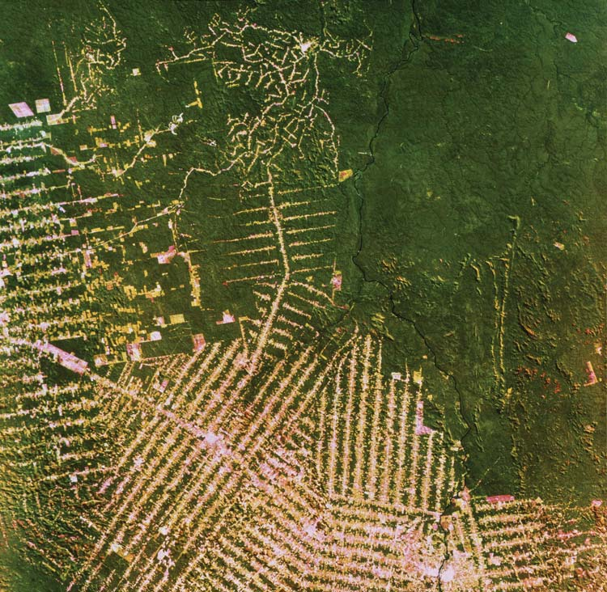
Diversidad biológica y biología de la conservación 1255
ques boreales de Alaska también están en peligro porque el gobierno de Estados Unidos puede incrementar en el futuro la tala en tierras públicas.
Repaso
■ Mencione tres servicios al ecosistema proporcionados por los bosques.
■ Mencione dos razones para la deforestación en los bosques lluviosos tropicales. ¿Cuál es la principal razón de la deforestación de los bosques boreales?
57.4 CAMBIO CLIMÁTICO
OBJETIVOS DE APRENDIZAJE
8 Mencionar por lo menos tres gases de efecto invernadero y explicar cómo contribuyen al cambio climático. 9 Describir cómo el cambio climático puede afectar el nivel del mar, los patrones de precipitación, los organismos (incluyendo los humanos) y la producción de alimentos.
La temperatura promedio de la Tierra se basa en mediciones diarias de varios miles de estaciones meteorológicas en tierra distribuidas en todo el mundo, así como en datos obtenidos por globos meteorológicos, satélites en órbita, naves transoceánicas y cientos de boyas en la superfi cie del mar con sensores de temperatura. Los datos indican que desde 1990 han ocurrido los 14 años más calientes desde mediados del siglo xix. La década de 1990 fue la más caliente del siglo xx y a principios de la década de 2000 continuó la tendencia de calentamiento ( FIGURA 57-15 ). Debido a que el clima está cambiando tan rápido, impone estrés a muchos organismos vivos y podría terminar por disminuir la diversidad biológica. Los científi cos de todo el mundo han estudiado el cambio climático durante varias décadas. A medida que se ha acumulado la evidencia, los más aptos para abordar el problema han alcanzado el fi rme consenso de que en el siglo xxi se experimentará un cambio climático importante
porque los ricos terratenientes tienen más infl uencia económica y política que los campesinos empobrecidos. Los agricultores de subsistencia a menudo siguen los caminos de acceso de los talamontes hasta que encuentran un sitio idóneo para establecerse. Primero cortan los árboles y los dejan secarse; luego queman la zona y siembran inmediatamente después de la quema. Este hecho se conoce como agricultura de roza y quema . Los rendimientos de las primeras cosechas suelen ser bastante altos porque los nutrientes que estaban en los árboles están ahora en el suelo. Sin embargo, la productividad del suelo disminuye rápidamente, de modo que las cosechas subsecuentes son pobres. En unos cuantos años el agricultor debe desplazarse a un nuevo sitio del bosque y repetir el proceso. Los ganaderos a menudo reclaman la tierra abandonada para transformarla en pastizales, porque la tierra que ya no es sufi cientemente fértil para la agricultura aún puede ser útil para la ganadería. La agricultura de roza y quema a pequeña escala, con períodos de 20 a 100 años entre ciclos, es sustentable. El bosque vuelve a crecer con rapidez al cabo de unos años de agricultura. Pero cuando millones de personas tratan de tener una forma de vida de este modo, no se deja que la tierra permanezca sin cultivar el tiempo sufi ciente para que se recupere. A nivel mundial, por lo menos 200 millones de agricultores de subsistencia viven de la agricultura de roza y quema, y el número sigue aumentando. Para agravar el problema, en la actualidad hay sólo aproximadamente la mitad del bosque que había disponible hace 50 años. Alrededor de 20% de la deforestación tropical es resultado de la tala comercial y grandes extensiones de bosques tropicales húmedos, en especial en el sureste de Asia, son taladas para exportación. La mayoría de los países tropicales permiten que la tala comercial avance mucho más rápido de lo que es sustentable porque les proporciona ingresos que son bastante necesarios. En el análisis fi nal, la deforestación tropical sin control no contribuye al desarrollo económico; en lugar de ello, reduce o destruye el valor de un recurso natural importante. Aproximadamente 12% de la destrucción del bosque tropical lluvioso se lleva a cabo para contar con grandes terrenos para la ganadería. La ganadería es particularmente importante en América Central. Mucha de la carne producida en estos ranchos, que a menudo son propiedad de compañías extranjeras, es exportada a cadenas restauranteras en Norteamérica y Europa. Una vez que los bosques han sido talados, el ganado pasta ahí hasta por 20 años, tiempo en el cual se agota la fertilidad del suelo. Cuando esto ocurre, plantas arbustivas, o sabana arbustiva , ocupan el terreno.
¿Por qué están desapareciendo los bosques boreales?
Los bosques tropicales lluviosos no son los únicos que están en peligro de deforestación. La tala extensiva de ciertos bosques boreales comenzó a fi nes de la década de 1980 y continúa en el presente. Los árboles coníferos siempre verdes como pinos, abetos, cedros y pinabete dominan estos bosques norteños de Alaska, Canadá, Escandinavia y el norte de Rusia. Los bosques boreales, cosechados primordialmente por tala rasa, en la actualidad son la fuente más importante de madera y fi bra de madera industrial en el mundo. Alrededor de 1 millón de hectáreas de bosques de Canadá son talados cada año y la mayoría de los bosques canadienses son tenencias de madereras. (Las tenencias son tratados entre las provincias y las compañías que otorgan a estas últimas el derecho de cortar madera). Canadá es el mayor exportador de madera en el mundo y la mayoría de sus productos forestales son exportados a Estados Unidos. Con base en las cuotas de cosecha actuales, la actividad maderera en Canadá no es sustentable. Grandes regiones de bosques boreales en Rusia también son taladas, aunque no se dispone de estimaciones exactas. Los bos-
1960 1970 1980 1990 2000 2010
Año
13.8
14.0
14.2
14.4
14.6
14.8
Temperatura global anual media (°C)
FIGURA 57-15 Temperatura media anual en el mundo, de 1960 a 2007 Los datos se presentan como temperaturas superfi ciales ( o C) para 1960, 1965 y cada año subsecuente. Las mediciones, que fl uctúan naturalmente, muestran con claridad la tendencia al calentamiento de las últimas décadas. (Surface Air Temperature Analysis, Goddard Institute for Space Studies, NASA).
1256 Capítulo 57
fera; además, debido a que los árboles eliminan de manera natural el bióxido de carbono de la atmósfera durante la fotosíntesis, la eliminación de éstos impide este proceso). Los niveles de los otros gases traza asociados con el cambio climático también están subiendo. El cambio climático ocurre porque estos gases absorben radiación infrarroja; es decir, calor, en la atmósfera. Esta absorción aminora el fl ujo natural de calor hacia el espacio, calentando la atmósfera inferior. Algo del calor de la atmósfera inferior se traspasa al océano y también eleva su temperatura. Esta retención de calor en la atmósfera es un fenómeno natural que ha hecho que la Tierra sea habitable para sus millones de especies. Sin embargo, a medida que las actividades humanas aumentan la concentración atmosférica de estos gases, la atmósfera y el océano siguen calentándose, por lo que la temperatura mundial total sube. Debido a que el bióxido de carbono y otros gases atrapan la radiación solar de manera semejante a como un vidrio lo hace en un invernadero, la captura natural de calor en la atmósfera se denomina efecto invernadero , y los gases que absorben radiación infrarroja se denominan gases de efecto invernadero . Este calentamiento natural de la atmósfera evita que la Tierra se convierta en un planeta congelado. Sin embargo, el calentamiento adicional producido cuando los niveles aumentados de gases producidos por actividades humanas absorben radiación infrarroja adicional, lo cual se denomina efecto invernadero intensifi cado , tiene implicaciones potencialmente catastrófi cas ( FIGURA 57-17 ). Aunque las tasas actuales de quema de combustibles fósiles y deforestación son elevadas, haciendo que el nivel de bióxido de carbono en la atmósfera suba de manera notoria, los científi cos consideran que la tendencia al calentamiento es menor de lo que podría indicar el incremento del nivel de bióxido de carbono. La razón es que el agua requiere más calor para subir su temperatura que los gases en la atmósfera. (Recuerde el alto calor específi co del agua analizado en el capítulo 2). Como resultado, el océano requiere más tiempo para calentarse que la atmósfera. La mayoría de los científi cos del clima piensan que el calentamiento será más pronunciado en la segunda mitad del siglo xxi que en la primera.
y que las actividades humanas serán responsables de la mayor parte de este cambio. En respuesta al creciente acuerdo científi co sobre el cambio climático y su causa humana, los gobiernos del mundo organizaron el Panel Intergubernamental sobre Cambio Climático (IPCC por sus siglas en inglés) de la ONU en 1988. Este Panel revisa toda la literatura publicada sobre el cambio climático global, especialmente artículos publicados durante los cinco años previos, y resume el estado de conocimiento e incertidumbre actual. Los impactos observados y proyectados del cambio climático en cada reporte del IPCC han empeorado de manera progresiva. El Cuarto Informe de Evaluación del IPCC de 2007 concluyó que los contaminantes del aire producidos por los humanos han ocasionado la mayor parte del cambio climático observado durante los pasados 50 años. El reporte del IPCC proyecta un aumento de 0.2 o C en la temperatura promedio mundial en cada una de las dos décadas siguientes. Para el año 2100, dependiendo de cuánto sea posible controlar la emisión de gases de efecto invernadero, las temperaturas podrían subir de 1.8 a 4.0 o C. Así, la Tierra puede volverse más caliente durante el siglo xxi de lo que ha estado por varios millones de años.
Los gases de efecto invernadero provocan el cambio climático
El bióxido de carbono (CO 2 ) y otros gases traza, entre ellos metano (CH 4 ), ozono superfi cial (O 3 ), óxido nitroso (N 2 O) y clorofl uorocarbonos (CFC), están acumulándose en la atmósfera como resultado de las actividades humanas ( TABLA 57-2 ). La concentración de CO 2 atmosférico ha aumentado desde aproximadamente 288 partes por millón (ppm) hace alrededor de 250 años (antes de que comenzara la Revolución Industrial) hasta 384 ppm en 2008 ( FIGURA 57-16 ). La quema de combustibles fósiles que contienen carbono (carbón, petróleo y gas natural) explica casi tres cuartas partes de las emisiones de bióxido de carbono a la atmósfera hechas por humanos. La conversión del terreno, como cuando los bosques son talados o quemados, también libera bióxido de carbono. (La quema libera bióxido de carbono hacia la atmós-
Cambios en gases de efecto invernadero seleccionados, desde la época preindustrial hasta el presente
Concentración preindustrial Concentración Gas estimada actual
Bióxido de carbono 288 ppm* 384 ppm
Metano 848 ppmm † 1851 ppmm
Óxido nítrico 285 ppmm 321 ppmm
Ozono troposférico 25 ppmm 34 ppmm
CFC-12 0 ppb ‡ 541 ppb
CFC-11 0 ppb 247 ppb
Nota: el valor preindustrial es para los siglos xvii y xviii.
Fuente: Carbon Dioxide Information Analysis Center, Environmental Sciences Division, Oak Ridge National Laboratory.
*ppm = partes por millón.
† ppmm = partes por mil millones.
‡ ppb = partes por billón.
TABLA 57-2
0
300
325
375
400
350
1960 1965 1970 1975 1980 1985 1990 1995 2000 Año 2005 2010
Concentración de bióxido de carbono (partes por millón)
FIGURA 57-16 Animada Bióxido de carbono en la atmósfera, de 1960 a 2008 Observe el incremento constante en la concentración de bióxido de carbono en la atmósfera. Las mediciones se toman en el Observatorio de Mauna Loa, Hawai, lejos de zonas urbanas donde fábricas, plantas generadoras de electricidad y vehículos motorizados emiten bióxido de carbono. (Scripps Institution of Oceanography, Universidad de California, La Jolla, California).
Diversidad biológica y biología de la conservación 1257
huracanes. Algunos de los países en mayor peligro son Bangladesh, Egipto, Vietnam, Mozambique y muchas naciones insulares como las Maldivas.
Con el cambio climático cambiarán los patrones de precipitación
Simulaciones por computadora de cambios climatológicos a medida que ocurra el calentamiento climático indican que los patrones de precipitación serán alterados, provocando que algunas zonas, como las partes continentales interiores, padezcan sequías más a menudo. Al mismo tiempo, tormentas y lluvias de nieve podrían provocar inundaciones más frecuentes en otras zonas. Los cambios en los patrones de precipitación podrían afectar la disponibilidad y calidad del agua dulce en muchos sitios. Zonas áridas o semiáridas, como la región de Sahel, justo al sur del Sahara, podría sufrir la escasez de agua más grave a medida que el clima se caliente. Más cerca de casa, los hidrólogos pronostican escasez de agua en el oeste estadunidense porque temperaturas invernales más cálidas ocasionarán más precipitación de lluvia que de nieve; la nieve que se derrite constituye actualmente 70% de los fl ujos de corrientes en el oeste estadunidense durante los meses de verano. La frecuencia e intensidad de las tormentas sobre aguas superfi ciales cálidas también podría aumentar. Los científi cos de la National Oceanic and Atmospheric Administration desarrollaron un modelo por computadora que examina cómo el cambio climático puede afectar a los huracanes. Cuando el modelo fue ejecutado con una temperatura superfi cial del mar de 2.2 °C más caliente que hoy, resultaron huracanes más intensos. (La cuestión de si los huracanes ocurrirán con mayor fr ecuencia en un clima más cálido permanece sin responder). Se esperan cambios en la frecuencia e intensidad de las tormentas porque a medida que la atmósfera se calienta, más agua se evapora, lo que a su vez libera más energía hacia la atmósfera. (Recuerde el análisis del calor de vaporización del agua en el capítulo 2). Esta energía genera tormentas más intensas.
Con el cambio climático, las zonas de distribución de los organismos están cambiando
Docenas de estudios informan acerca de los efectos del cambio climático sobre los organismos, desde las épocas de fl oración en los vegetales hasta las épocas de reproducción en aves. Por ejemplo, los investigadores han determinado que las poblaciones de zooplancton en la corriente de California han disminuido 80% desde 1951, aparentemente debido a que la corriente se ha calentado ligeramente. (La corriente de California fl uye desde Oregon hacia el sur a lo largo de la costa de California). La disminución del zooplancton ha afectado la red alimentaria de todo el ecosistema, y también han disminuido las poblaciones de aves marinas y peces que se alimentan de plancton. Las temperaturas más cálidas en la Antártida, durante los pasados 50 años la temperatura media anual en la península Antártica ha subido 2.6 ºC, han contribuido al fracaso reproductivo de los pingüinos Adélie. Las aves normalmente desovan en afl oramientos rocosos sin nieve, pero las temperaturas más cálidas han provocado más nevadas (recuerde que el aire caliente retiene más humedad), que se funden cuando las aves incuban sus huevos. La nieve derretida forma estanques fríos de aguanieve que matan los embriones de las crías en desarrollo. Los biólogos suelen estar de acuerdo en que el cambio climático afectará gravemente a los vegetales, que no pueden migrar tan rápido como los animales cuando cambian las condiciones ambientales. (La velocidad de la dispersión de semillas tiene limitaciones defi nidas). Durante los cambios climáticos pasados, como durante el retroceso glacial que ocurrió hace aproximadamente 12,000 años, el límite superior de dispersión para especies arbóreas era probablemente de 200 km por siglo. Si la Tierra se calienta tanto durante el siglo xxi como indican las
¿Cuáles son los efectos probables del cambio climático?
A continuación se considerarán algunos de los efectos probables del cambio climático, entre ellos: cambios en el nivel del mar y en el patrón de precipitación; efectos sobre la diversidad biológica, incluyendo a los humanos; y efectos sobre la agricultura. Estos cambios perdurarán por siglos porque muchos gases de efecto invernadero permanecen en la atmósfera por cientos de años. Además, incluso después de que las concentraciones de los gases de efecto invernadero se hayan estabilizado, los científi cos consideran que la temperatura media de la superfi cie del planeta continuará subiendo porque el mar se ajusta al cambio climático con base en una escala temporal retrasada.
Con el cambio climático, el nivel del mar promedio en el mundo está subiendo
A medida que la temperatura global de la Tierra sube en apenas unos cuantos grados, podría haber un deshielo importante de los glaciares y las capas polares. Además del aumento en el nivel del mar ocasionado por el retroceso de los glaciares y el deshielo de la capa polar, dicho nivel subirá debido a la dilatación térmica del mar caliente. El agua, como otras sustancias, se dilata cuando se calienta. El IPCC estima que el nivel del mar subirá de 18 a 59 cm para 2100 y observa que incluso podría ser mayor. Un aumento así inundaría zonas costeras bajas, como partes de Luisiana y el sur de Florida. Las zonas costeras que no están inundadas tienen mayor probabilidad de sufrir erosión y otros daños a causa de eventos climatológicos más frecuentes e intensos, como
Los gases de efecto invernadero en la atmósfera están ocasionando un efecto invernadero intensifi cado.
Mucho calor irradiado desde la Tierra es redirigido de vuelta a la superficie terrestre.
Atmósfera
Calor Calor
Superficie de la Tierra
Luz solar Sólo algo del calor irradiado desde la Tierra escapa al espacio.
Bióxido de carbono
FIGURA 57-17 Animada Efecto invernadero intensifi cado La acumulación de bióxido de carbono y otros gases de efecto invernadero en la atmósfera absorbe algo de la radiación infrarroja (calor) y la redirige de vuelta a la superfi cie de la Tierra. Como resultado, la atmósfera, la tierra y el océano están calentándose.
PUNTO CLAVE
1258 Capítulo 57
extremo, que son días exageradamente calientes y húmedos durante los meses del verano. Registros médicos muestran que las muertes relacionadas con el calor entre gente mayor y otras personas vulnerables aumentan durante esos eventos. El cambio climático también ha afectado de manera indirecta la salud humana. Los mosquitos y otros portadores de enfermedades podrían ampliar su zona de distribución hacia áreas recientemente calientes y dispersar malaria, dengue, fi ebre amarilla, fi ebre del valle del Rift y encefalitis viral. Hasta entre 50 y 80 millones de casos adicionales de malaria podrían ocurrir anualmente en zonas tropicales, subtropicales y templadas. Los países altamente desarrollados son menos vulnerables a los brotes de estas enfermedades porque cuentan con viviendas más idóneas (lo cual mantiene fuera a los mosquitos), mejores cuidados médicos, control de pestes y medidas de salud pública, como plantas para tratamiento de aguas. Por ejemplo, Texas reportó algunos casos de dengue a fi nes de la década de 1990, mientras que cerca de México hubo miles de casos durante ese período.
El cambio climático puede incrementar los problemas para la agricultura
Varios estudios muestran que al aumento en el nivel del mar inundará deltas de ríos, que son algunas de las mejores tierras agrícolas del mundo. Los ríos Nilo (Egipto), Mississippi (Estados Unidos) y Yang-tze (China) son ejemplos de deltas de ríos que han sido estudiados. Es probable que proliferen ciertas pestes agrícolas y organismos causantes de enfermedades. Como ya se mencionó, el cambio climático también podría aumentar la frecuencia y duración de las sequías y, en algunas zonas, inundaciones que dañarán los cultivos. A escala regional, los modelos actuales del calentamiento global pronostican que la productividad agrícola aumentará en algunas zonas y disminuirá en otras. Los modelos sugieren que Canadá y Rusia incrementarán su productividad agrícola en un clima más cálido, mientras que las
proyecciones, las zonas de distribución de algunas especies arbóreas templadas podrían desplazarse hacia el norte hasta 480 km. El Departamento de Agricultura de Estados Unidos reporta zonas de resistencia con base en las temperaturas bajas promedio en una zona. Las zonas de resistencia, que indican cuáles plantas estarán bien bajo determinados rangos de temperatura en diferentes sitios en el país, se han desplazado considerablemente durante las pasadas dos décadas ( FIGURA 57-18 ). Cada especie reacciona de manera diferente a los cambios de temperatura. En respuesta al cambio climático, es probable que algunas especies se extingan, en particular aquellas con requerimientos de temperatura estrechos, las confi nadas a pequeñas reservas o parques y las que viven en ecosistemas frágiles. Otras especies podrían sobrevivir en poblaciones y zonas de distribución bastante reducidas. Los ecosistemas considerados como los más vulnerables a la pérdida de especies a corto plazo son los mares polares, los arrecifes de coral y los atolones, las praderas pantanosas, los humedales costeros, la tundra, los bosques boreales, los bosques tropicales y las montañas, en especial la tundra alpina. En respuesta al cambio climático, algunas especies podrían dispersarse hacia nuevos ambientes o adaptarse a las condiciones cambiantes en su hábitat actual. El cambio climático podría no afectar a ciertas especies, mientras que otras podrían surgir como ganadoras, en poblaciones y zonas de distribución bastante amplifi cadas. Las especies consideradas con mayor probabilidad de prosperar incluyen malezas, plagas y organismos portadores de enfermedades, todos los cuales son en general ya comunes en muchos ambientes diferentes.
El cambio climático tendrá un efecto más pronunciado sobre la salud humana en países en desarrollo
Se están acumulando datos que relacionan el cambio climático con problemas en la salud humana. Desde 1950, Estados Unidos ha experimentado un incremento en la frecuencia de eventos de estrés térmico
Mapa de 1990
Zona
Mapa de 2006
Según el USDA Plant Hardiness Zone Map, USDA Miscellaneous Publication, núm. 1475, publicado en enero de 1990 National Arbor Day Foundation Plant Hardiness Zone Map publicado en 2006
© 2006 by The National Arbor Day Foundation ®
2 3 4 5 6 7 8 9 10
FIGURA 57-18 Zonas de resistencia de las plantas en Estados Unidos, de 1990 a 2006 Las zonas de resistencia de las plantas fueron desarrolladas para granjeros y jardineros a fi n de ayudarles a identifi car cuáles plantas son más adecuadas para sus lugares de residencia. En 2006 fue necesario volver a defi nir las zonas como resultado del cambio climático. (Cortesía de la USDA and National Arbor Day Foundation).
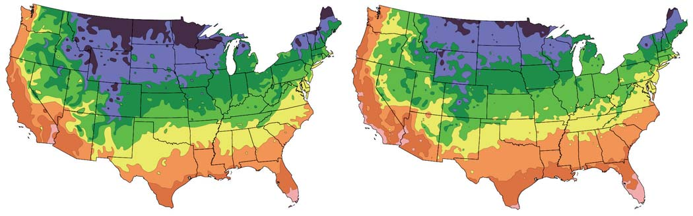
Diversidad biológica y biología de la conservación 1259
en 1985 los científi cos observaron un adelgazamiento más grande de lo normal. Este incremento en el adelgazamiento, que empieza cada septiembre, suele referirse comúnmente como el “agujero de ozono” ( FI-
GURA 57-20 ). Durante la década de 1990, la zona adelgazada de ozono continuó creciendo y para 2000 había alcanzado el tamaño récord de 28.3 millones de km 2 , mayor que Norteamérica. Además, los niveles mundiales de ozono estratosférico disminuyeron por varias décadas. Según el National Center for Atmospheric Research, desde 1970 los niveles de ozono sobre Europa y Norteamérica han descendido casi 10%.
Ciertos productos químicos destruyen el ozono estratosférico
Las sustancias químicas que contienen cloro y bromo catalizan la destrucción del ozono. Los principales productos químicos responsables de la pérdida de ozono en la estratosfera son un grupo de compuestos de cloro denominados clorofl uorocarbonos ( CFC ). Los clorofl uorocarbonos han sido usados como impelentes en las latas de aerosoles, enfriadores en acondicionadores de aire y refrigeradores, agentes de soplado de espuma para aislantes y empaquetado, y solventes y limpiadores en la industria de la electrónica. Los compuestos adicionales que también atacan la capa de ozono incluyen halones (que se encuentran en muchos extintores de incendios), bromuro de metilo (un pesticida), metilcloroformo (un solvente industrial) y tetracloruro de carbono (usado en muchos procesos industriales, incluida la manufactura de pesticidas y colorantes). Una vez que son liberados en la troposfera inferior, los CFC y compuestos semejantes lentamente fl otan hacia la estratosfera, donde la radiación ultravioleta los descompone, liberando cloro. De manera semejante, la descomposición de los halones y el bromuro de metilo liberan bromo. El adelgazamiento de la capa de ozono sobre la Antártida ocurre anualmente entre septiembre y noviembre (primavera en el hemisferio sur). En estas fechas ocurren dos condiciones im-
regiones tropicales y subtropicales, donde viven muchos de los pobres del mundo, la disminuirán. América Central y el Sudeste de Asia tienen alguna experiencia de grandes disminuciones en la productividad agrícola.
Repaso
■ ¿Qué es el efecto de invernadero intensifi cado?
■ ¿Cómo es que los gases de efecto invernadero producen el efecto de invernadero intensifi cado?
■ ¿Cuáles son algunos de los problemas importantes que podría ocasionar el cambio climático en el siglo xxi?
57.5 DISMINUCIÓN DEL OZONO ESTRATOSFÉRICO
OBJETIVOS DE APRENDIZAJE
10 Distinguir entre ozono superfi cial y ozono estratosférico. 11 Citar las causas y los efectos potenciales de la destrucción del ozono en la estratosfera.
El ozono (O 3 ) es una forma de oxígeno que es un contaminante producido por los humanos en la atmósfera inferior pero una parte esencial de la estratosfera producida de forma natural (vea la fi gura 21-7). La estratosfera , que rodea el planeta aproximadamente de 10 a 45 km por arriba de la superfi cie, contiene una capa de ozono que protege a la superfi cie de buena parte de la radiación ultravioleta proveniente del Sol ( FIGURA 57-19 ). Si el ozono desapareciera de la estratosfera, la Tierra no sería un lugar apto para la mayoría de las formas de vida. El ozono en la atmósfera inferior se convierte otra vez en oxígeno en unos cuantos días, de modo que no repone el ozono agotado en la estratosfera. Un ligero adelgazamiento en la capa de ozono sobre la Antártida se forma de manera natural durante algunos meses cada año. Sin embargo,
El adelgazamiento del ozono estratosférico es acelerado por productos químicos que contienen cloro y bromo producidos por los humanos.
Superficie de la Tierra
Ozono
Oxígeno
Superficie de la Tierra
Estratosfera
Radiación solar ultravioleta
Troposfera
- El ozono estratosférico absorbe 99% de la radiación ultravioleta que llega, protegiendo eficazmente la superficie de la Tierra. (b) Cuando el ozono estratosférico disminuye, más radiación ultravioleta de alta energía penetra la atmósfera hacia la superficie, donde calienta a los organismos.
FIGURA 57-19 Animada La radiación ultravioleta y la capa de ozono
PUNTO CLAVE
1260 Capítulo 57
pero millones de personas en naciones en desarrollo no pueden pagar la operación, por lo que permanecen parcial o totalmente ciegas. El incremento en los niveles de radiación UV perturba ciertos ecosistemas. Por ejemplo, la productividad del fi toplancton de la Antártida, las microscópicas algas que se mueven a la deriva y son la base de la red alimentaria en la Antártida, ha disminuido a causa del incremento de la exposición a la UVB. (La UVB, uno de los tres tipos de radiación UV, es particularmente dañina para el ADN). La investigación indica que la radiación UV superfi cial inhibe la fotosíntesis en este fi toplancton. Los biólogos también han documentado daño directo a las poblaciones naturales de peces en la Antártida. Un aumento de mutaciones en el ADN en huevos y larvas de peces (peces jóvenes) se relacionó con un incremento en los niveles de radiación UV; los investigadores están estudiando actualmente si estas mutaciones disminuyen la capacidad del animal para sobrevivir. También hay una preocupación de que altos niveles de radiación UV puedan dañar cultivos y bosques, pero los efectos de la radiación UVB sobre las plantas son muy complejos y no han sido estudiados de manera adecuada. Los vegetales interactúan con muchas otras especies en ecosistemas naturales y agrícolas, y los efectos de la radiación UV sobre cada uno de estos organismos, a su vez, afecta directamente a las plantas. Por ejemplo, la exposición a niveles mayores de radiación UVB puede incrementar la producción de trigo al inhibir a los hongos que provocan enfermedades en este cereal. Por el contrario, la exposición a niveles superiores de radiación UV podría disminuir la producción de pepinos porque incrementa la incidencia de enfermedades en ellos.
La cooperación internacional está ayudando a reparar la capa de ozono
En 1987, representantes de muchos países se encontraron en Montreal para fi rmar el Protocolo de Montreal , un tratado que originalmente estipulaba una reducción de 50% en la producción de CFC en 1998. Después de que los científi cos reportaron que disminuciones en el ozono estratosférico ocurrieron sobre las densamente pobladas latitudes medias del hemisferio norte en todas las estaciones, el Protocolo de Montreal fue modifi cado a fi n de incluir medidas más estrictas para limitar la producción de CFC. Las compañías industriales que manufacturan CFC rápidamente desarrollaron sustitutos. La producción de CFC, tetracloruro de carbono y metilcloroformo fue eliminada por completo en Estados Unidos y otros países altamente desarrollados en 1996, con excepción de una cantidad relativamente baja exportada a países en desarrollo. Sin embargo, las reservas existentes podrían ser utilizadas al fi nal del plazo. Los países en desarrollo eliminaron el uso de CFC en 2005. Se suponía que el bromuro de metilo sería eliminado en 2005 en países altamente desarrollados, responsables de 80% del uso mundial de este producto químico. Sin embargo, a estos países se les ha otorgado más tiempo para encontrar sustitutos efi caces. Los hidroclorofl uorocarbonos (HCFC) serán eliminados en 2030. Mediciones por satélite tomadas en 1997 proporcionaron la primera evidencia de que los niveles de los productos químicos que agotan la capa de ozono estaban empezando a disminuir en la estratosfera. A principios de la década de 2000 fueron evidentes los primeros signos de recuperación de la capa de ozono; la tasa de agotamiento de ozono estratosférico estaba disminuyendo. Sin embargo, los niveles atmosféricos de dos productos químicos (CFC-12 y halon-1211) producidos todavía por países en desarrollo podrían haber aumentado. Los CFC son extremadamente estables y los que están en uso actualmente tal vez continúen agotando el ozono estratosférico durante por lo menos 50 años. Sin embargo, en el supuesto de
portantes: la luz del Sol regresa a la región polar y el vórtice circumpolar , una masa de aire frío que circula alrededor de la región polar del sur y la aísla del aire más caliente en el resto del planeta, está bien desarrollado. El aire frío ocasiona la formación de nubes en la estratosfera polar; estas nubes contienen cristales de hielo a los que se adhieren el cloro y el bromo, haciendo posible que destruyan el ozono. La luz del Sol promueve la reacción química en la que el cloro o el bromo descomponen las moléculas de ozono, convirtiéndolas en moléculas de O 2 . La reacción química en la que el ozono es destruido no modifi ca el cloro o el bromo, de modo que un simple átomo de cloro o bromo descompone varios miles de moléculas de ozono. El cloro y el bromo permanecen en la estratosfera durante muchos años. Cuando el vórtice circumpolar se descompone, el aire sin ozono se dispersa hacia el norte, diluyendo los niveles de ozono en la estratosfera sobre Sudamérica, Nueva Zelanda y Australia.
El agotamiento de la capa de ozono daña a los organismos
Con el agotamiento de la capa de ozono, más radiación ultravioleta llega a la superfi cie. La exposición excesiva a radiación UV está relacionada con problemas en la salud humana, como cataratas, cáncer de piel y un sistema inmunológico debilitado. La lente del ojo humano contiene proteínas transparentes que son reemplazadas a un ritmo muy lento. La exposición a radiación ultravioleta en exceso daña estas proteínas y con el paso del tiempo el daño se acumula; las cataratas se forman a medida que la lente se vuelve opaca. Las cataratas pueden tratarse quirúrgicamente,
110 220 330
Ozono (unidades de Dobson)
440 550
NASA
FIGURA 57-20 Adelgazamiento de la capa de ozono Una imagen generada por computadora de parte del hemisferio sur, tomada el 30 de septiembre de 2009, muestra el adelgazamiento de la capa de ozono ( zonas morada y azul ). La zona adelgazada de la capa de ozono no es estacionaria, sino que es desplazada por corrientes de aire. (Las unidades Dobson miden el ozono estratosférico. Se denominan así en honor del científi co británico Gordon Dobson, quien estudió los niveles de ozono sobre la Antártida a fi nales de la década de 1950).
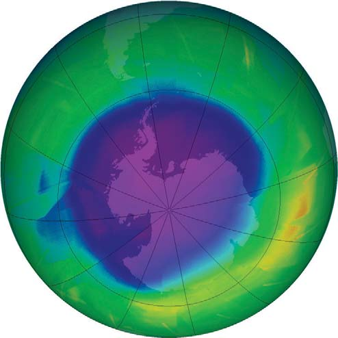
Diversidad biológica y biología de la conservación 1261
tución de cambio destructivo por cambio constructivo es la clave para asegurar la sobrevivencia de la biosfera.
Repaso
■ ¿Qué servicios ambientales proporciona la capa de ozono estratosférico?
■ ¿Cómo ocurre el agotamiento de la capa de ozono?
■ ¿Cuáles son algunas consecuencias del adelgazamiento de la capa de ozono?
que los países continúen adheridos al Protocolo de Montreal, los científi cos esperan que el adelgazamiento de la capa de ozono, exacerbada por los humanos, termine por disminuir en el futuro. ¿Cuál es el mensaje para tener en cuenta de este capítulo? Los humanos comparten mucho en común con el destino de otros organismos en el planeta. No somos inmunes al daño ambiental que hemos producido. Sin embargo, diferimos de otros organismos en nuestra capacidad para refl exionar sobre las consecuencias de nuestras acciones y de modifi car nuestra conducta como corresponde. Los humanos, tanto a nivel individual como colectivamente, pueden producir el cambio. La amplia susti-
57.1 ( página 1243 )
1 Identifi car los distintos niveles de biodiversidad: diversidad genética, riqueza de especies y diversidad del ecosistema.
■ La diversidad genética es la variedad genética dentro de una especie, dentro de una población dada y entre poblaciones separadas geográfi camente. La riqueza de especies es el número de especies de arqueas, bacterias, protistas, plantas, hongos y animales. La diversidad de ecosistemas es la variedad de ecosistemas de la Tierra, como bosques, praderas, desiertos, lagos, estuarios costeros y arrecifes de coral. 2 Distinguir entre especies amenazadas, especies en peligro y especies extintas.
■ La extinción de una especie ocurre cuando muere el último individuo de la especie. Una especie cuya población gravemente reducida en toda su zona de distribución o en parte importante de ella la coloca en peligro inminente de extinción se clasifi ca como especie en peligro de extinción . Cuando la extinción es menos inminente pero la población es bastante pequeña, una especie se clasifi ca como especie amenazada .
Dodo
3 Analizar por lo menos cuatro causas de la disminución de la diversidad biológica e identifi car la más importante.
■ Las actividades humanas que reducen la diversidad biológica incluyen la pérdida del hábitat y la fragmentación del hábitat , la contaminación, la introducción de especies invasoras , las pestes y el control de depredadores, la caza comercial ilegal y la explotación comercial . De éstas, las más importantes son la pérdida y la fragmentación del hábitat.
57.2 ( página 1249 )
4 Defi nir biología de la conservación y comparar las medidas de conservación in situ y ex situ.
■ La biología de la conservación es el estudio de cómo los humanos afectan a los organismos y del desarrollo de formas para proteger la diversidad biológica.
■ Esfuerzos para preservar la diversidad biológica en la naturaleza, conocidos como conservación in situ , se requieren urgentemente en los puntos críticos de la biodiversidad . Cada vez más, los biólogos están centrando sus esfuerzos en la preservación de la diversidad biológica en ecosistemas y paisajes completos, que constan de muchos ecosistemas interactuantes.
■ La conservación ex situ implica la conservación de especies individuales en establecimientos controlados por los humanos. Algunos ejemplos son la cría de especies cautivas en zoológicos y el almacenamiento de semillas de cultivos vegetales genéticamente diversos. 5 Describir los benefi cios y las defi ciencias de la Ley de Especies en Peligro de Extinción de Estados Unidos y de la Convención sobre Comercio Internacional de Especies de Fauna y Flora Silvestres en Peligro.
■ La Ley de Especies Amenazadas (ESA) autoriza al Fish and Wildlife Service (FWS) de Estados Unidos a proteger especies en peligro y amenazadas de extinción, tanto en Estados Unidos como en el extranjero. La ESA no compensa a los poseedores de propiedad privada que sufren pérdidas económicas porque no son capaces de desarrollar sus terrenos en caso de que en ellos habiten especies en peligro de extinción o amenazadas. A los conservacionistas les agradaría reforzar a la ESA para gestionar ecosistemas completos, en lugar de especies en peligro de extinción y entidades individuales.
■ A nivel internacional, la Convención sobre Comercio Internacional de Especies de Fauna y Flora Silvestres en Peligro (CITES) protege animales y vegetales considerados valiosos en el altamente lucrativo comercio de la vida silvestre. Su aplicación varía de un país a otro. Donde se aplica, las penalizaciones no son severas, de modo que el comercio ilegal de especies raras continúa.
57.3 ( página 1253 )
6 Analizar los servicios que los bosques prestan a los ecosistemas y describir las consecuencias de la deforestación.
■ Los bosques proporcionan muchos servicios a los ecosistemas , entre ellos: hábitat para la vida silvestre, protección de cuencas, prevención de erosión del suelo, moderación del clima y protección contra inundaciones.
■ La deforestación es la tala temporal o permanente de los bosques para agricultura y otros usos. La deforestación aumenta la erosión del suelo y disminuye su fertilidad, contribuye a la pérdida de la diversidad biológica, afecta de manera adversa las cuencas y puede trastornar los cambios climáticos regionales y mundiales.
Aprenda más sobre la deforestación al hacer clic en la fi gura en CengageNOW.
7 Dar por lo menos tres razones de por qué los bosques (tropicales lluviosos y boreales) están desapareciendo actualmente.
■ Los bosques son destruidos para proporcionar tierra agrícola a los agricultores de subsistencia, para la producción de madera, para contar con espacios abiertos para la ganadería y para obtener madera para combustible. La agricultura de subsistencia , en la que una familia produce comida sufi ciente para alimentarse, explica mucho de la deforestación de los bosques tropicales. La tala extensiva de bosques boreales en Alaska, Canadá y Rusia es la fuente más importante de madera y fi bra de madera industriales.
■ En la agricultura de roza y quema , los árboles son talados y quemados a fi n de permitir el crecimiento de cultivos en el suelo. La producción de la primera cosecha es alta porque los nutrientes que estaban en los árboles ahora están disponibles en el suelo. Una vez que disminuye la productividad del suelo, el agricultor se desplaza a otro sitio del bosque y repite el proceso.
■ ■ RESUMEN: ENFOQUE EN LOS OBJETIVOS DE APRENDIZAJE
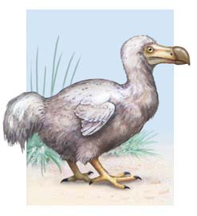
1262 Capítulo 57
desarrollo) se están acumulando. Los problemas para la agricultura incluyen más inundaciones, más sequías y una disminución en la productividad agrícola en zonas tropicales y subtropicales.
57.5 ( página 1259 )
10 Distinguir entre ozono superfi cial y ozono estratosférico.
■ El ozono (O 3 ) es una forma de oxígeno que es un contaminante producido por los humanos en la atmósfera inferior pero una parte esencial producida naturalmente de la estratosfera. La estratosfera , que rodea a la Tierra aproximadamente a 45 km de la superfi cie, contiene una capa de ozono que protege la superfi cie de buena parte de la dañina radiación ultravioleta proveniente del Sol. 11 Citar las causas y los efectos potenciales de la destrucción del ozono en la estratosfera.
■ Grandes regiones de adelgazamiento de la capa de ozono se desarrollan sobre la Antártida cada año. Los clorofl uorocarbonos y compuestos semejantes que contienen cloro y bromo atacan la capa de ozono.
■ La exposición excesiva a la radiación UV se relaciona con problemas de salud en los humanos, entre ellos: cataratas, cáncer de piel y un sistema inmunológico debilitado. El incremento de los niveles de radiación UV puede perturbar a los ecosistemas, como la red alimentaria de la Antártida. Altos niveles de radiación UV pueden dañar cultivos y bosques.
Aprenda más sobre la radiación ultravioleta al hacer clic en la fi gura en CengageNOW.
57.4 ( página 1255 )
8 Mencionar por lo menos tres gases de efecto invernadero y explicar cómo contribuyen al cambio climático.
■ Los gases de efecto invernadero (bióxido de carbono, metano, ozono superfi cial, óxido nítrico y los clorofl uorocarbonos) provocan el efecto invernadero , en el que la atmósfera retiene calor y calienta la superfi cie de la Tierra. El incremento en la atmósfera de los niveles de CO 2 y otros gases de efecto invernadero producidos por los humanos está motivando preocupaciones sobre el efecto invernadero intensifi cado , que es calentamiento adicional provocado por el aumento de los niveles de gases que absorben radiación infrarroja.
Observe el desarrollo del efecto invernadero intensifi cado al hacer clic en la fi gura en CengageNOW.
9 Describir cómo el cambio climático puede afectar el nivel del mar, los patrones de precipitación, los organismos (incluyendo los humanos) y la producción de alimentos.
■ Durante el siglo xxi, el cambio climático está provocando un aumento en el nivel del mar. Los patrones de precipitación están cambiando, lo cual da por resultado más sequías en algunas zonas e inundaciones más frecuentes en otras.
■ Los biólogos consideran que el cambio climático ocasionará que algunas especies se extingan, otras permanezcan sin cambio y otras incrementen sus poblaciones y zonas de distribución. Los datos que relacionan el cambio climático con problemas en la salud humana (en particular en países en
¿Cuál de las siguientes afi rmaciones acerca de la extinción no es correcta? (a) la extinción es la pérdida permanente de una especie (b) la extinción es un proceso biológico natural (c) una vez que una especie se ha extinguido, jamás vuelve a existir (d) las actividades humanas tiene poco impacto sobre las extinciones (e) miles de especies vegetales y animales están actualmente en peligro de extinción
Una especie en peligro de extinción (a) está gravemente reducida en cantidad (b) está en peligro inminente de extinguirse en toda su zona de distribución o en una parte importante de ésta (c) por lo general no tiene variabilidad genética reducida (d) no está en peligro de extinción en el futuro inmediato (e) a y b
La razón más importante de la disminución de la diversidad biológica es (a) la contaminación del aire (b) la introducción de especies extrañas (invasoras) (c) la destrucción y fragmentación del hábitat (d) la caza comercial ilegal (e) la explotación comercial
Los corredores del hábitat (a) rodean un hábitat dado (b) cortan un hábitat, produciendo un efecto de borde (c) varían en ancho dependiendo de las especies designadas para su protección (d) son una estrategia importante de la conservación ex situ (e) han sido ampliamente adoptados por los ecologistas de la restauración
La conservación in situ (a) incluye la crianza de especies cautivas en zoológicos (b) incluye el almacenamiento de semillas de cultivos genéticamente diversos (c) se centra en la preservación de la diversidad biológica en la naturaleza (d) se enfoca en animales grandes y carismáticos (e) a y b
La ecología de la restauración (a) es el estudio de cómo los humanos impactan a los organismos (b) regresa un ambiente degradado a su estado anterior tanto como es posible (c) es un ejemplo de conservación ex situ (d) ha sido usada con éxito para revertir la disminución
de poblaciones de anfi bios (e) es una disposición importante de la Ley de Especies en Peligro de Extinción
¿Cuál de los siguientes hechos está relacionado con la disminución de poblaciones de anfi bios? (a) productos químicos agrícolas (b) aumento en la radiación UV (c) enfermedades infecciosas (d) cambio climático mundial (e) todos los anteriores
Aproximadamente 60% de la deforestación de los bosques tropicales húmedos es resultado de (a) la tala comercial (b) la ganadería (c) las presas hidroeléctricas (d) la minería (e) la agricultura de subsistencia
¿Cuál de los siguientes gases contribuye tanto al cambio climático como al adelgazamiento de la capa de ozono? (a) CO 2 (b) CH 4 (c) O 3 superfi cial (d) CFC (e) N 2 O
El cambio climático ocurre porque (a) el bióxido de carbono y otros gases de efecto invernadero reaccionan químicamente para producir calor en exceso (b) la Tierra tiene muchos invernaderos y otras construcciones de vidrio (c) las erupciones volcánicas producen grandes cantidades de azufre y otros gases de efecto invernadero (d) el bióxido de carbono y otros gases de efecto invernadero atrapan la radiación infrarroja en la atmósfera (e) el bióxido de carbono y otros gases de efecto invernadero permiten que el calor en exceso salga de la atmósfera
¿Cuál de los siguientes gases es un contaminante producido por los humanos en la atmósfera inferior (superfi cie) pero un gas natural y benéfi co en la estratosfera? (a) CO 2 (b) CH 4 (c) O 3 (d) CFC (e) N 2 O
¿Dónde es más pronunciado el agotamiento de la capa de ozono? (a) sobre la Antártida (b) sobre el ecuador (c) sobre Sudamérica (d) sobre Norteamérica y Europa (e) sobre Alaska y Siberia
EVALÚE SU COMPRENSIÓN
Diversidad biológica y biología de la conservación 1263
¿Por qué podrían fracasar los programas de cría en cautiverio para reinsertar especies en ambientes naturales?
Los biólogos de la conservación suelen decir que su disciplina tiene menos que ver con la biología y más con la economía y la toma de decisiones. ¿Qué cree que signifi que esto?
Un nombre más descriptivo para el Homo sapiens es Homo peligroso . Explique este epíteto específi co dado lo que ha aprendido en este capítulo.
VÍNCULO CON LA EVOLUCIÓN. Debido a que nuevas especies terminarán por evolucionar para sustituir a las que los humanos están llevando a la extinción, ¿por qué la disminución de la diversidad biológica es una amenaza?
VÍNCULO CON LA EVOLUCIÓN. Los biólogos se han preguntado cómo las especies introducidas que probablemente tienen una variación genética limitada (debido al efecto fundador) sobreviven y se adaptan con tanto éxito que se vuelven invasoras. Parte de la respuesta podría ser que las especies invasoras son resultado de introducciones múltiples en lugar de una sola introducción. Explique cómo las introducciones múltiples de una zona nativa de una especie a una zona introducida podrían aumentar el éxito de esa invasión de especies.
VÍNCULO CON LA EVOLUCIÓN. Los biólogos de la conservación han alterado la evolución de las poblaciones de salmón en programas de cría en cautiverio. La hembra silvestre del salmón tiende a producir pocos huevos grandes porque éstos contienen más nutrientes para la descendencia, proporcionando a cada individuo mayor posibilidad de sobrevivir. Sin embargo, al cabo de unas cuantas generaciones, las hembras criadas en cautiverio desovan una mayor cantidad de huevos pequeños. Sugiera una posible ventaja adaptativa para muchos huevos pequeños en el ambiente de cría en cautiverio. ¿Qué pronosticaría el lector respecto al éxito reproductivo de hembras criadas en cautiverio dejadas en libertad en la naturaleza?
ANÁLISIS DE DATOS. Estudie la gráfi ca, que muestra los efectos combinados de varios factores sobre la diversidad biológica en 12 ecosistemas terrestres y acuáticos diferentes. ¿Cuál es el factor más importante en general? ¿Por qué cree usted que el cambio climático
y el aumento de CO 2 atmosférico están representados como factores separados? ¿Qué es la contaminación por nitrógeno? (Adaptado de Sala, O. E. et al., Science , vol. 287, 2000).
0
0.2
0.4
0.6
0.8
1.0
Efecto relativo de los factores
Fragmentación del hábitat
Cambio climático
Contaminación por nitrógeno
Especies invasoras
Aumento en CO 2 atmosférico
- CIENCIA, TECNOLOGÍA Y SOCIEDAD. Si usted tuviera la tarea de desarrollar una política para que Estados Unidos enfrente el cambio climático mundial durante los próximos 50 años, ¿qué propondría? Explique su respuesta.
Preguntas adicionales están disponibles en CengageNOW en www.cengage.com/login.
PENSAMIENTO CRÍTICO